You stand the watch on the bridge of RMS Titanic at 11:39 pm on 14 April 1912. She makes 22½ knots on a course of 266°. Somewhere ahead is ice. What you order, and when, decides what the ice does to her. The flooding model then decides whether she sinks, and how. After the ice the night goes on: reports reach the bridge, the boats go down, the wireless calls for help. When she founders, the page follows her two pieces down to the sea bed.
The simulator computes the sinking instead of animating it. A model of her hull and compartments works out, a quarter of a second at a time, where the water goes and how she floats with it. The 3D view only draws what the model says; the same model runs without it, in Node, for the tests (chapter 11).
The flooding is fitted to an eyewitness reconstruction of her trim through the night (Halpern, 2023) and to her foundering 157 to 160 minutes after the collision, on the 1912 damage and on the reconstructed watch together. Four numbers were fitted; nothing else was tuned. Cases the fit never saw are kept as checks: four or five compartments open, Olympic after the Hawke collision of 1911, and Britannic in 1916. Chapter 9 shows them. The boats are fitted to the launch record of 1912 with 3 numbers of their own.
In this build the 1912 damage gives: Founders at 2:18 am, 2 h 38 min after the damage. The reconstructed watch, on the night's own orders, founders at 2:19 am, 158.9 minutes after she touched the ice. On the night she went down 157 to 160 minutes after the collision.
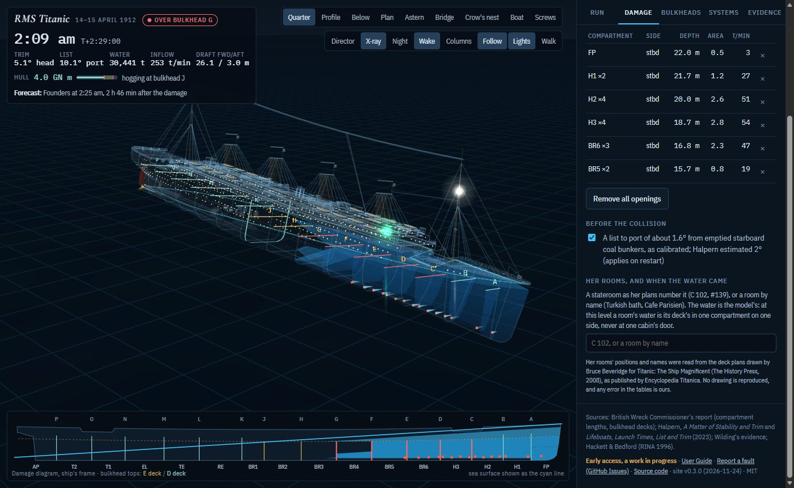
Ten minutes from opening the page to your first forecast; a few more, at a faster clock, to her end.
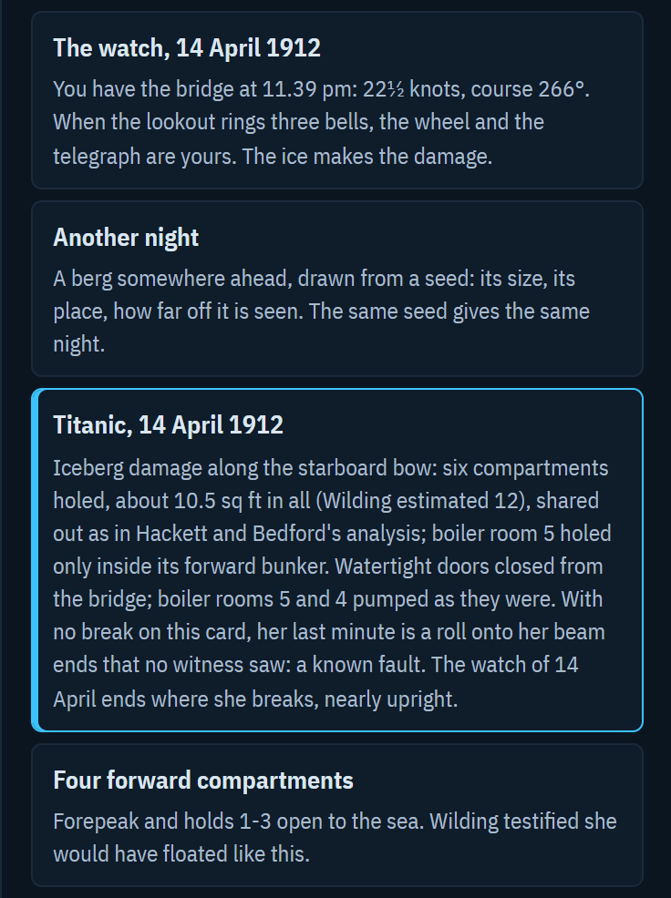
#night=1912 opens it directly. The Bridge appears over the 3D view. Nothing is in sight yet, and the clock runs at real time.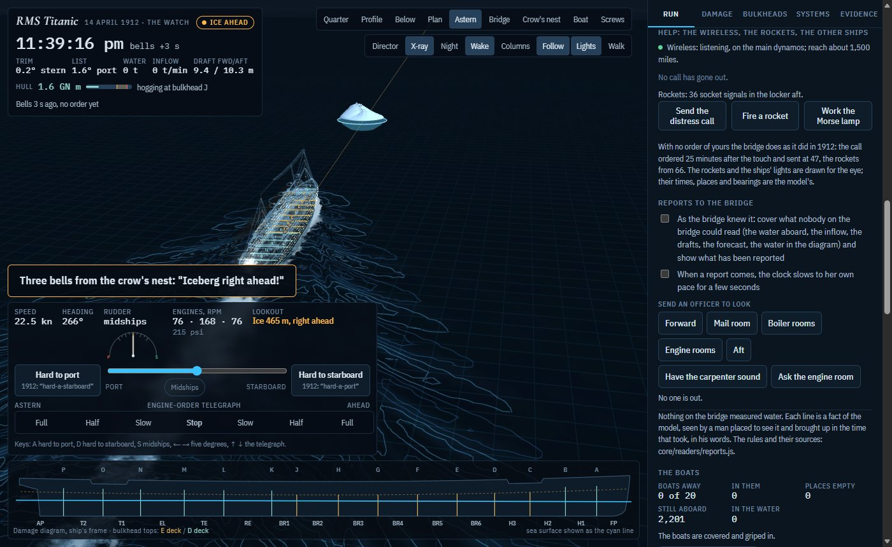
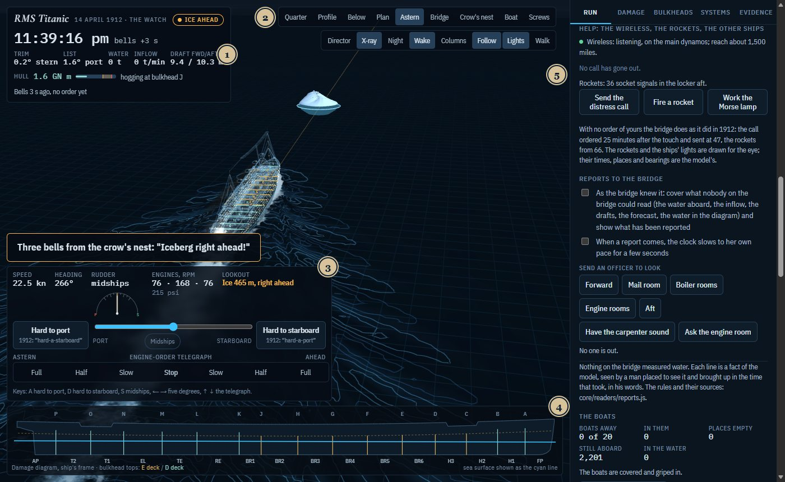
The box at the top left names the ship and the night, gives the status, the ship's time, five readouts and the hull's gauge. Under them one line carries the watch before the ice ("Bells 3 s ago, no order yet") and the forecast after it. Two more kinds of line join them late in the night: the mark of where she would break, and, once she has foundered, a line for each of her pieces as it falls.
| Readout | What it shows |
|---|---|
| The time | Ship's time. On a watch it shows the seconds, with the time since the bells or the touch beside it. On a damage preset, the time since the collision. |
| Trim | Degrees down by the head (the bow) or by the stern. |
| List | Degrees down to port or to starboard. |
| Water | Tons of sea water aboard. |
| Inflow | Tons a minute coming in. |
| Draft fwd/aft | Metres of hull under water at the bow and at the stern. |
| Hull | The bending moment of her hull where it is greatest over boiler room 1, in GN m, on a bar that marks what the studies say her hull could bear, 4.0 to 5.4 GN m: teal below that range, amber within it, red past it. Chapter 6. |
| She would break here, now | A red line under the gauge, from the moment her bending and shear somewhere along her reach what her hull could bear there: the station, the space it lies in, and the ship's time. Nothing breaks. Chapter 6. |
| Depth · Speed · Pressure · Water · Under | After she founders, a line for each piece of her as it falls to the bed: its depth, its speed, the sea's pressure and temperature there, and the time since it went under. Chapter 6. |
The status is one coloured word or two. On a watch: On watch, Ice ahead, On the ice, then Clear if she passed it. Otherwise: Intact, Afloat, Flooding, "Over bulkhead" and its letter when water pours over a bulkhead's top, and at the end Foundered. From the touch on, a strip under the views counts the boats: how many are away, the people in them, the places that went empty.
The buttons at the top right move the camera. Drag the 3D view to turn it, scroll or pinch to zoom, and drag with the right button or with Shift held to move sideways. From the Bridge, the crow's nest and the boat, dragging looks about.
| Button | The view |
|---|---|
| Quarter | Off her starboard bow, from above. The damage presets open here. |
| Profile | Her starboard side, level with her. |
| Below | From under the sea, looking up at her bottom. |
| Plan | From straight above. |
| Astern | From astern and above, looking where she is going. A watch opens here. |
| Bridge | From her navigating bridge, looking ahead: what the officer of the watch saw. |
| Crow's nest | The lookouts' eye on the foremast, about 29 m above the water (a guess), carried by her pose. |
| Boat | The eye of someone in a lifeboat lying 300 m off her port beam, 1.2 m above the sea. The boat stays where it is while she moves on or goes down; the wheel or a pinch brings it nearer or farther, and the button again lays it off her beam once more. |
| Screws | Under the sea off her starboard quarter: the rudder, the screws and their shafts. |
| Director | Hands the camera to the night: at the bells, the touch, the first boat, each rocket and her last minutes it chooses the view and holds her own pace for a few seconds, with a small caption of the ship's time. Any view button takes the camera back. |
| X-ray | A see-through hull, showing the water in each space (and in each pocket, its own surface while it fills), the bulkheads and their letters, and the engines. On at the start. |
| Night | The night as a person there would have seen it. Night and X-ray take turns: choosing one turns the other off. |
| Wake | On a watch, her wake as the model makes it: the waves her hull raises and the white water where they break and in her screws' races (below). On at the start, but on a phone. |
| Columns | The vertical columns the model adds up, one box each where it holds water, and a box of its own for each pocket. |
| Follow | Keeps the camera on her as she moves and settles. |
| Lights | Draws her lights. They are the model's: they fail when her dynamos do. |
| Walk | Puts you on her decks, an eye 1.7 m above E deck amidships, to walk her while she sinks, on the model's own water. The button again, or Esc, brings you out (chapter 6). |
While she falls to the bed, four more views head a strip at the right of the stage; Quarter, Profile, Below, Plan and Astern follow her bow, and Screws her stern; and the zoom reaches out to 6.5 km (chapter 6).
The wheel, the engine-order telegraph and the instruments, over the lower part of the view. It appears on a watch only. Chapter 4 takes it in turn.
Her profile in the ship's own frame, from the after peak (AP, at the left) to the forepeak (FP, at the right): the fifteen bulkheads lettered A to P, and the compartments between them. Brass tops stand to E deck, teal ones to D deck. The cyan line is the sea's surface as she lies, so it tilts as she trims. Water fills each compartment as it comes in, and the holes show as red marks. The two pockets inside her compartments, boiler room 5's bunker and the forepeak's tank (chapter 10), fill on their own, each in its own place.
| Tab | What it holds | Chapter |
|---|---|---|
| Run | The watch and its orders; on a watch, help, the reports to the bridge and the boats; the scenario cards, the clock, the forecast and the log | 5, 6, 7 |
| Damage | The hole tool, the hole size and the list of openings | 7 |
| Bulkheads | The watertight doors and the height of the bulkheads | 7 |
| Systems | Her machinery: what depends on what, the pumps and the orders to them, the boiler rooms, the coal | 8 |
| Evidence | The run against the eyewitness record, and the cases the fit never saw | 9 |
Night draws what a person there would have seen: a clear, moonless, flat-calm night, stars to the horizon and mirrored in the glassy sea, a black sea, her own lights. The berg is a dark mass a little paler than the sky, with no white water at its foot, which is why it was seen so late. Her lit ports shine in the water and go out with her dynamos. All of it is appearance, chosen in the code and marked there; X-ray is how the physics is read.
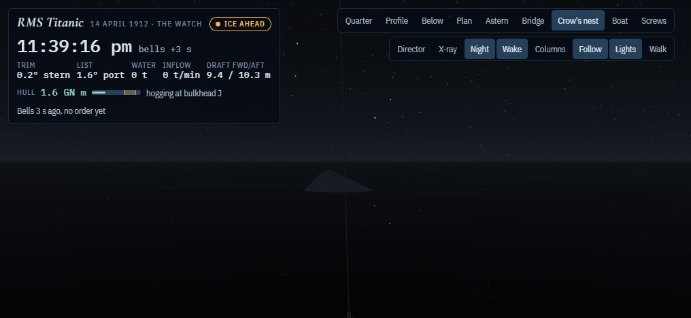
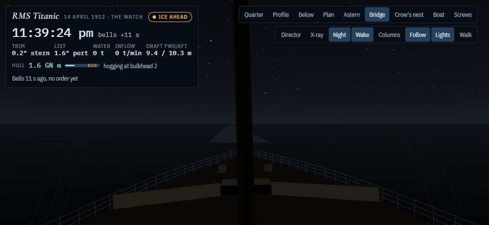
On a watch the sea round her is the model's, not a drawing. Her hull raises a field of waves as it moves, worked out step by step from her speed, her turning and her drift; and white water is made where those waves are too steep to stand, in a sheet off each bow, and in the races of her three screws, as much as each shaft's thrust makes. The white water stays on the sea where it was made, spreads and dies away, so what she did is written on the water behind her. Ring Stop and the white road astern fades as her screws' races die; ring Full astern and the wing screws throw their races forward along her sides. Nothing of Kelvin's wedge is drawn by rule: the V of waves either side of her track, the waves across it and the lopsided wake of a turn come out of the field.
Wake, with the display switches, turns it off and on. It is on from the start, but on a phone, where it waits to be asked for. Off, the page draws what it drew before: a ribbon from her stern, a bow wave and Kelvin's lines. They stand in as well for a watch's first seconds, while the field is being made, and whenever the clock runs at 10× or faster, quicker than the field can follow. A damage preset lies stopped and has no wake.
Where the waves are and how high, and where white water is made, are the model's. How much white water each cause makes and how long it lasts are estimates, marked in the code (chapter 10). The drawing is appearance: the sheen and shade on the slopes, the lines of equal height every quarter of a metre in the X-ray look, the broken edges of the foam. In the Night look her own lights show the white water close about her; farther off it is a darker road on the black sea.
With Sound ticked, the ship has a sound of her own beside the bells, the telegraph's gong and the engines' beat. Each sound's loudness follows a number in the model; only the timbres are the page's own.
Each view hears its own mix: the wind and the bell on the Bridge and in the crow's nest, the engines and the water below the waterline, everything faint from the boat. The ship at sea: volume sets the level. The sound is silent when switched off, paused or foundered, and fades as the clock runs faster than her own pace. Nobody has tuned the levels by ear yet.
The same model and the same controls. The readouts keep Trim, List, Water and the hull gauge; the view buttons scroll sideways; the Bridge sits between the readouts and the damage diagram, and on a short screen gives way to the end card while it is up and to the walk while you walk. The panel becomes a sheet along the bottom: tap a tab to open it, and tap the tab again or ⌄ to close it. After she founders, the strip of her fall stands at the right edge in the room the readouts and the Bridge leave it, with the boats' count to its left, below the view buttons.
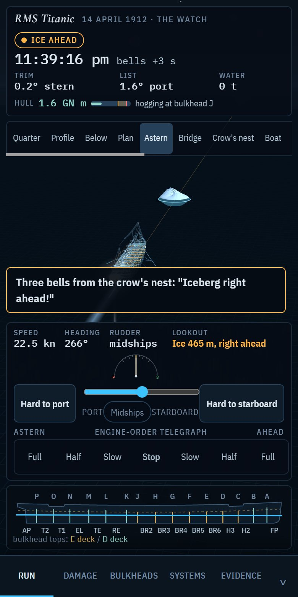
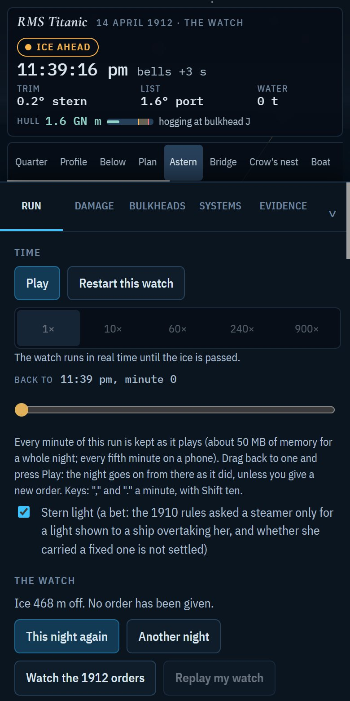
Two controls ran the ship in 1912: the wheel, through the steering engines, and the engine-order telegraph to the engine room. The Bridge gives you both, with the instruments to read her answer.
| Instrument | What it shows |
|---|---|
| Speed | Knots through the water, and "astern" when she goes backwards. |
| Heading | Her course in degrees, 266 at the start of the 1912 watch. |
| Rudder | Where the rudder is, to port or starboard. The dial under it has two needles: the broad gold one is the order, the thin one the rudder following it. |
| Engines, rpm | Revolutions a minute of the port engine, the turbine and the starboard engine. Under them, the steam pressure, with "short" when there is not enough steam for the order. |
| Lookout | Nothing in sight until the bells; then the range and bearing of the ice; On the ice while she is on it; then whether she cleared it. |
In 1912 helm orders were tiller orders, the reverse of today's. "Hard-a-starboard" put the tiller to starboard, the rudder to port, and swung her head to port. Each button says both:
| Button | The 1912 order | Her head goes |
|---|---|---|
| Hard to port | "hard-a-starboard" | to port |
| Hard to starboard | "hard-a-port" | to starboard |
| Midships | "midships" | straight on: the rudder centred |
The slider between the buttons sets any angle up to 40 degrees either side. The steering engines move the rudder at 4 degrees a second (a guess: it was never measured), so hard over from midships takes 10 seconds. They need steam: without it the rudder stays where it is.
Seven positions, from Full astern on the left to Full ahead on the right. Each rings the engine room for so many revolutions a minute:
| Position | Button | Revolutions a minute |
|---|---|---|
| Full astern | Full | 75 astern |
| Half astern | Half | 50 astern |
| Slow astern | Slow | 30 astern |
| Stop | Stop | 0 |
| Slow ahead | Slow | 30 ahead |
| Half ahead | Half | 50 ahead |
| Full ahead | Full | 75 ahead |
The two reciprocating engines turn the wing screws. Their exhaust steam drives the turbine, which turns the centre screw: ahead only, at Half or Full, and with both engines above 40 revolutions. Reversing an engine takes time: it runs down, its valve gear is reversed, and it comes up astern.
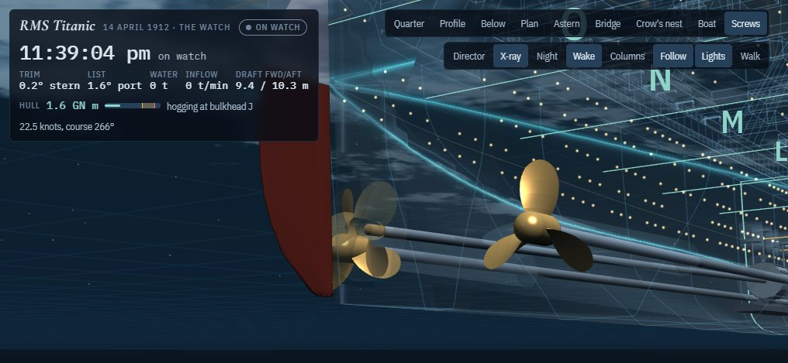
| Key | On a watch |
|---|---|
| A · D | Hard to port · Hard to starboard |
| S | Midships |
| ← · → | The wheel five degrees to port · to starboard |
| ↑ · ↓ | The telegraph one step ahead · one step astern |
| Space · R | Pause or play · restart (these work on every run) |
The keys of the watch work wherever the focus was left, except in a text box, a slider or a tick box. Space and R work when no button has the focus; with a button focused, Space presses it.
The lookout rings three bells when the ice comes within the night's sighting range. On the 1912 night that is about 500 yards; in this build the bells ring with the ice 494 m off. Your reaction time runs from the bells to your first order to the wheel or the engines. An order given before the bells is logged, but it is not a reaction: nobody had seen anything yet, so the panel calls it hindsight. Orders to the doors, the stokehold, the pumps, the boats and the wireless do not count.
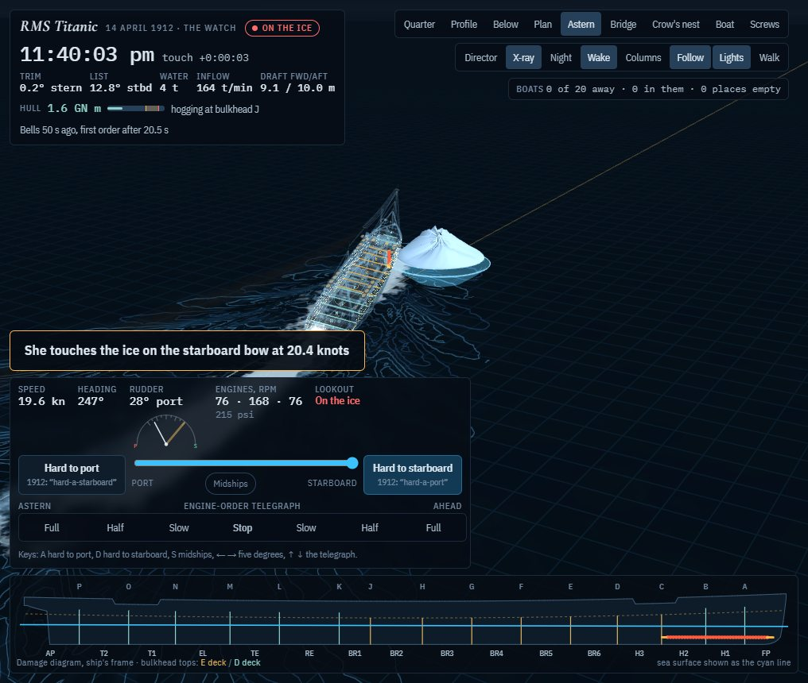
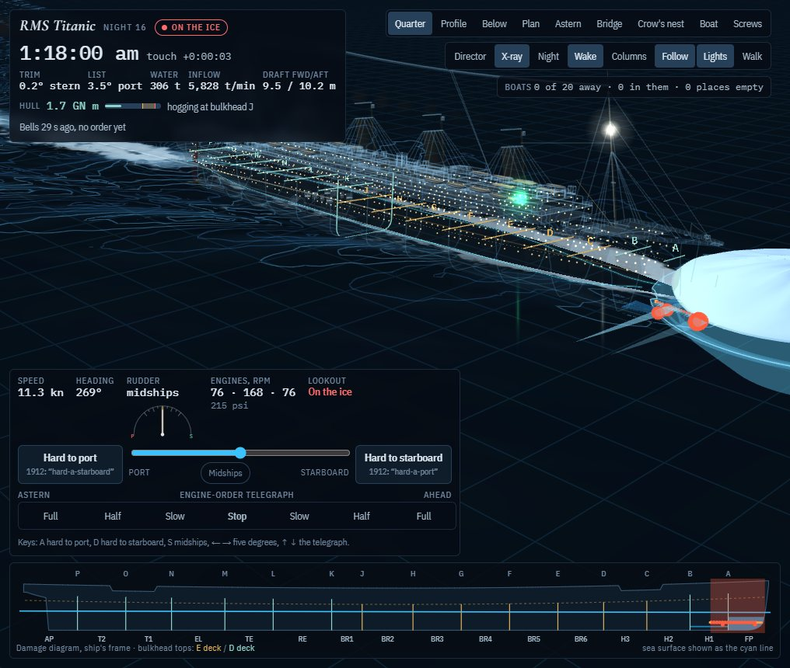
When the encounter is over (the ice is abaft the beam and out of reach, or she has stopped, or she has lain against it for ten seconds), the Run tab and a notice give the outcome in one sentence:
| Outcome | What happened |
|---|---|
| Clear of the ice | She passed it. The sentence says how far off her side it went. |
| Clear, but dented | She touched it. Plating dented, no seam opened, no water. |
| Holed | Seams opened along her side, compartment by compartment: the 1912 kind of damage. The sentence gives the area open and the compartments. |
| Stem into the ice | She struck it head on. Her bow crushes and the compartments in it open to the sea. Wilding told the inquiry she would have come in with her bow crushed 80 to 100 feet. |
On the 1912 orders the sentence is Holed: 0.82 m2 of seams open along the starboard side, the forepeak to boiler room 5. Night 16 with no order ends Stem into the ice: bow crushed in 20 m, 0.10 m2 of seams open along the port side. Open to the sea: the forepeak to No. 1 hold.
Once the encounter is over, the clock is free: run it faster with the speed buttons. The page then runs a copy of the whole watch on to the end, in the background: her plant, the engineers' rules, every order given and the scripted orders still to come all go with it, and the line under the readouts gives the forecast. Its time is the watch's own: on the 1912 orders it reads Founders at 2:18 am, 2 h 39 min after the touch, and she founders 158.9 minutes after the touch in the forecast and 158.9 when the watch is run to her end. An order to the ship given after the ice (to the pumps, say) brings a new forecast. An order to the boats, the reports or the wireless changes nothing in the model and brings none, unless it ends the 1912 orders before their Stop. If she will float, the forecast says so, with her final trim and the water aboard.
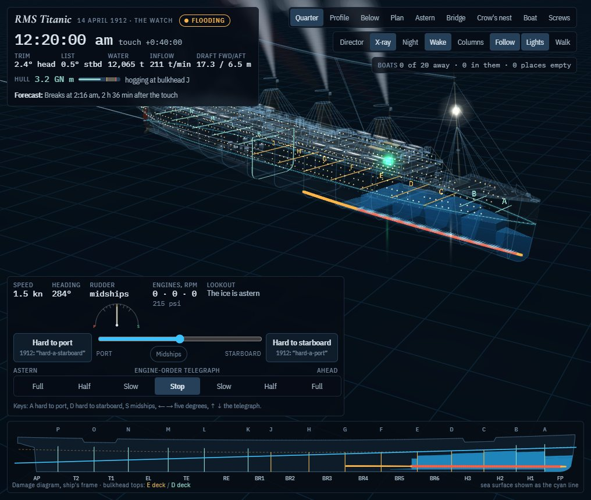
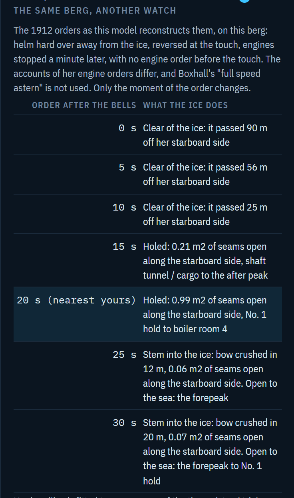
After every watch the Run tab works out the same drill on the same berg with the order given 0, 5, 10 and up to 30 seconds after the bells. The drill is the one of 1912: the helm hard over away from the ice, reversed at the touch, the engines stopped a minute later. Only the moment of the order changes, so the table shows how much the seconds mattered.
The repository's own tests run the same drill on the 1912 berg, each order half a second later than the page's:
| Order after the bells | Ice ahead | What the ice does |
|---|---|---|
| 0.5 s | 489 m | Clear of the ice: it passed 86 m off her starboard side |
| 5.5 s | 431 m | Clear of the ice: it passed 52 m off her starboard side |
| 10.5 s | 373 m | Clear of the ice: it passed 22 m off her starboard side |
| 15.5 s | 315 m | Holed: 0.19 m2 of seams open along the starboard side, electric engine room to shaft tunnel / refrigerated cargo |
| 20.5 s | 257 m | Holed: 0.82 m2 of seams open along the starboard side, the forepeak to boiler room 5 |
| 25.5 s | 199 m | Stem into the ice: bow crushed in 13 m, 0.05 m2 of seams open along the starboard side. Open to the sea: the forepeak to No. 1 hold |
| 30.5 s | 141 m | Stem into the ice: bow crushed in 20 m, 0.05 m2 of seams open along the starboard side. Open to the sea: the forepeak to No. 1 hold |
When she founders, lies steady with water aboard, or has passed the ice untouched, a card on the stage says what happened, in plain words, every figure read from the model at that moment: when she went and how long after the touch, beside the record's own time; what the ice did; when the first order came; her lights; what her pumps put back over the side; and the watch's fingerprint. If she founders, the card gains a line as each of her two pieces comes to rest on the bed (chapter 6).
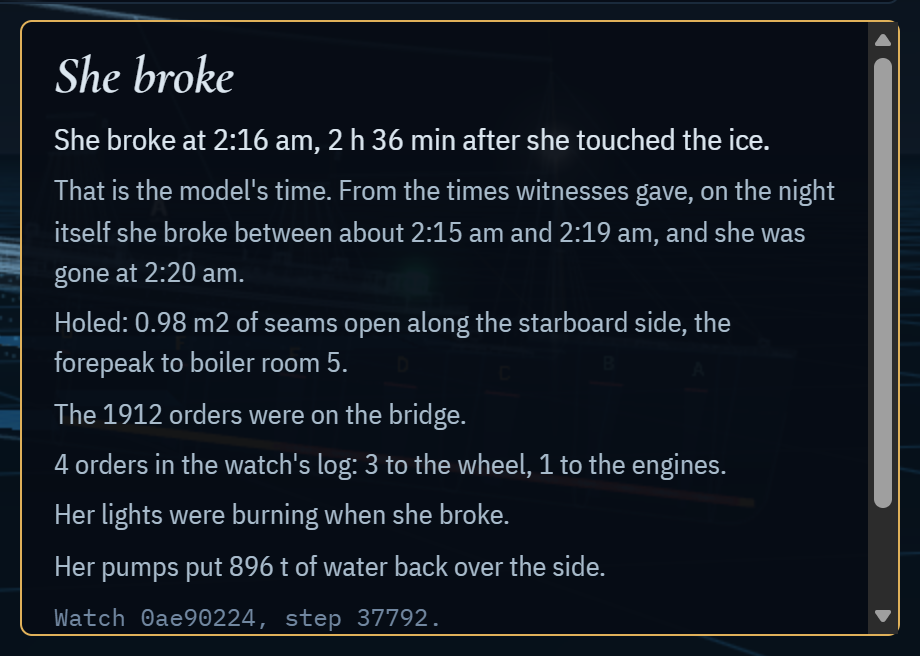
This night again starts the same night afresh; Close puts the card away. Copy a link to this watch copies an address that holds the night's seed and every order given, for example #night=1912&log=W1sxMz…. A night is its seed and its orders, so whoever opens the link sees the same watch, bit for bit on the same browser. Orders that arrive in an address are checked before they reach the model: an order the model does not have, a rudder angle past the stops or a door that is not there, and the night opens without them. If the browser will not copy, the link appears in a box on the card to be copied by hand.
#night=1912, with &kn=18 or &level=early when they are not the defaults, and &log= with the orders when it came from the card.The repository runs the 1912 drill on two hundred drawn nights at each level, with the order at the bells and later:
| The order | Seen early: clear · stem | Any night: clear · stem | Like 1912: clear · stem |
|---|---|---|---|
| At the bells | 100 % · 0 % | 96 % · 0 % | 100 % · 0 % |
| 5 s after the bells | 100 % · 0 % | 86 % · 1 % | 100 % · 0 % |
| 10 s after the bells | 100 % · 0 % | 76 % · 7 % | 97 % · 0 % |
| 15 s after the bells | 99 % · 0 % | 64 % · 15 % | 73 % · 0 % |
| 20.5 s after the bells | 89 % · 0 % | 49 % · 19 % | 34 % · 13 % |
| No order at all | 28 % · 44 % | 28 % · 44 % | 0 % · 70 % |
Of 200 drawn nights at each level, the share on which she clears the ice, and the share on which she meets it stem first. The order is the 1912 drill: the helm hard over away from the ice, reversed at the touch.
With no order at all, on the default level, she meets the ice stem first on 44 % of nights; with the order at the bells, on 0 %.
The encounter takes a minute or two; what follows took two and a half hours, and most of it could only be watched. Four readers of the watch follow the rest of the night. Each reads the model and keeps an account of its own, and none changes the night: a watch has the same fingerprint with all of them as with none.
They appear on a watch only, as sections of the Run tab and as marks on the stage. Their orders go in the watch's log with the helm's, so Replay my watch and a link from the card replay them too. Each takes the watch over as the wheel does: on the 1912 orders it drops those still to come, and the watch is yours from then on.
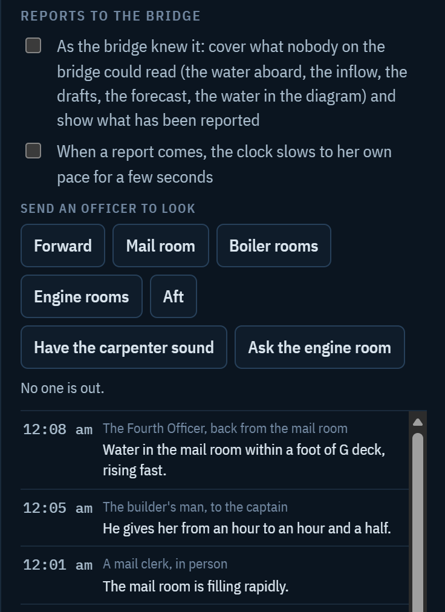
Nothing on her bridge measured water. A report in the simulator is a fact of the model, noticed by a man placed to notice it and brought to the bridge in the time that took, in his words: the carpenter after sounding, the mail clerks, the chief engineer by messenger, the officer of the watch by eye, the commutator read on the bridge. The section Reports to the bridge lists them, newest first, and a notice shows each as it comes.
The bridge can send for more. Under Send an officer to look: Forward, Mail room, Boiler rooms, Engine rooms or Aft; Have the carpenter sound the wells; Ask the engine room with a note to the chief engineer. Each man takes the time his errand took; a button stays grey while he is out.
On the 1912 orders the bridge heard this, in this order:
| Time | Who, and how | What he said |
|---|---|---|
| 11:40 pm | The ship, felt on the bridge | A tremble and a grinding along her starboard side. |
| 11:47 pm | The officer of the watch, by eye | A little down by the head: the forecastle head about 50 ft above the water. |
| 11:49 pm | The Fourth Officer, back from forward | No damage seen forward, down to F deck. |
| 11:52 pm | The carpenter, in person | Making water fast: 12 ft in No. 1 hold, 12 ft in No. 2 hold, 11 ft in No. 3 hold. |
| 11:56 pm | The chief engineer, by a messenger | Boiler room 6 flooded; its men have left. Boiler room 5: 1 ft of water, its pumps on it. |
| 12:03 am | The officer of the watch, by eye | Down by the head: the forecastle head about 40 ft above the water. |
| 12:04 am | A mail clerk, in person | The mail room is filling rapidly. |
| 12:05 am | The builder's man, to the captain | He gives her from an hour to an hour and a half. |
| 12:11 am | The Fourth Officer, back from the mail room | Water in the mail room within 2 feet of G deck, rising fast. |
| 12:37 am | The purser, from a steward, in person | Water on F deck forward. |
| 12:39 am | The officer of the watch, by eye | Well down by the head: the forecastle head about 25 ft above the water. |
| 12:43 am | The purser, from a steward, in person | Water on F deck amidships. |
| 12:45 am | The Fourth Officer, back from forward | Water on F deck over No. 1 hold, No. 2 hold and No. 3 hold; water on E deck forward. |
| 12:51 am | The purser, from a steward, in person | Water on E deck amidships. |
| 12:52 am | The purser, from a steward, in person | Water on E deck forward. |
| 1:48 am | The officer of the watch, by eye | The forward well deck is awash. |
| 1:59 am | The officer of the watch, by eye | The forecastle head goes under. |
| 2:08 am | The chief engineer, by telephone | Boiler room 6 flooded; its men have left. Boiler room 5 flooded; its men have left. Boiler room 4 flooded; its men have left. Boiler room 3: 6 ft of water, its pumps on it. |
| 2:16 am | The officer of the watch, by eye | Water comes over the bridge. |
The page's feed on the 1912 orders, oldest first. Left out: the commutator, read 8 times.
The box As the bridge knew it covers what nobody on the bridge could read: the water aboard, the inflow, the drafts, the forecast and the water in the damage diagram. In their place the readouts show Trim, by eye, the Commutator (the list as the bridge's instrument gave it) and what has been Reported, and the damage diagram shows each compartment as reported: not known, dry, water, or flooded. X-ray and this view take turns: one turns the other off.
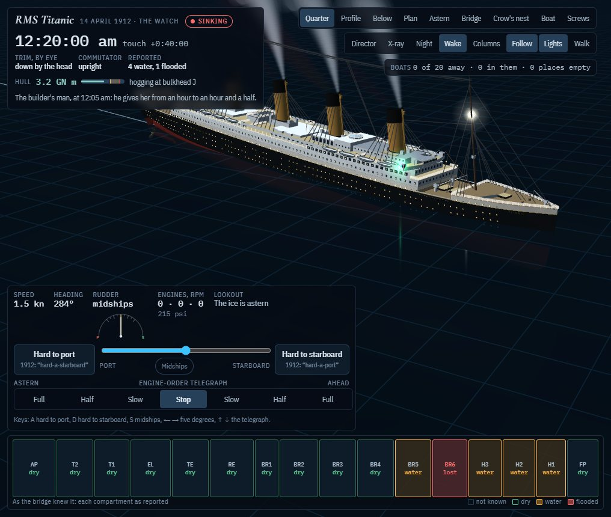
The engineers work her pumps by their own rules from the touch on, and on a watch you can give the pumps orders of your own from the Systems tab. Chapter 8 has them.
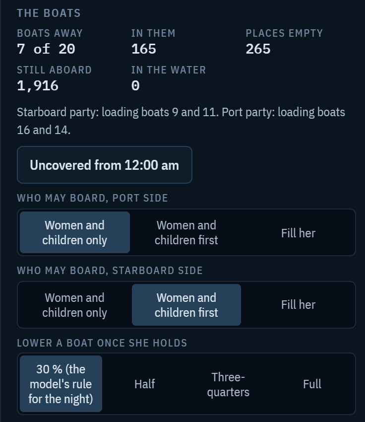
Twenty boats with 1,178 places for the 2,201 people aboard. The model moves places and minutes, not persons: the boats are uncovered, swung out, loaded and lowered by two parties of officers and hands, one to a side, at the rates the record gives, and people come forward to them the more readily the more she is down by the head. It names nobody and draws no person.
From the touch on, a strip on the stage counts Boats away, the people in them, the places that went empty and, at the end, the people in the water. The section The boats on the Run tab gives the same counts (Boats away, In them, Places empty, Still aboard, In the water), a line on what each party is doing, the table Boat by boat, and three orders:
A boat is lowered by hand down the falls, more slowly when she is down by the head, when she lists against the boat, in the dark, and at half the pace with more than 1 knots of way on her; not at all above 5 knots, nor from a station within 2 m of the sea. An order that cannot be carried out says why.
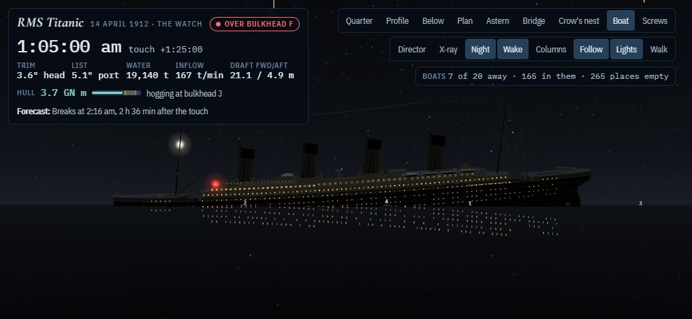
On the 1912 orders, 14 of the 18 boats lowered from the davits go within ten minutes of the record's time, and 637 people are in them against the record's 671. Outside the ten minutes (minutes early or late): 11 (-13), 4 (-38), 2 (-30), C (-19). At her end the strip reads 19 of 20 boats away, 684 in them, 447 places empty and 1,517 in the water.
| Boat | Side | Places | The record: away | In her | The model: away | In her | Minutes |
|---|---|---|---|---|---|---|---|
| 7 | stbd | 65 | 12:40 am | 28 | 12:47 am | 20 | +7 |
| 5 | stbd | 65 | 12:44 am | 36 | 12:53 am | 20 | +9 |
| 3 | stbd | 65 | 12:55 am | 32 | 12:59 am | 20 | +4 |
| 1 | stbd | 40 | 1:05 am | 12 | 1:02 am | 21 | -3 |
| 9 | stbd | 65 | 1:30 am | 40 | 1:22 am | 65 | -8 |
| 11 | stbd | 65 | 1:35 am | 50 | 1:22 am | 65 | -13 |
| 13 | stbd | 65 | 1:40 am | 55 | 1:37 am | 65 | -3 |
| 15 | stbd | 65 | 1:41 am | 68 | 1:37 am | 65 | -4 |
| 8 | port | 65 | 1:00 am | 25 | 12:55 am | 20 | -5 |
| 6 | port | 65 | 1:10 am | 23 | 1:04 am | 20 | -6 |
| 4 | port | 65 | 1:50 am | 30 | 1:12 am | 21 | -38 |
| 2 | port | 40 | 1:45 am | 17 | 1:15 am | 12 | -30 |
| 16 | port | 65 | 1:20 am | 53 | 1:29 am | 45 | +9 |
| 14 | port | 65 | 1:25 am | 40 | 1:29 am | 44 | +4 |
| 12 | port | 65 | 1:30 am | 42 | 1:38 am | 20 | +8 |
| 10 | port | 65 | 1:50 am | 57 | 1:52 am | 20 | +2 |
| C | stbd | 47 | 2:00 am | 43 | 1:41 am | 47 | -19 |
| D | port | 47 | 2:05 am | 20 | 2:01 am | 47 | -4 |
| A | stbd | 47 | floated off | – | 2:12 am | 47 | |
| B | port | 47 | floated off | – | floated off | – |
The record is the re-examined launch times and numbers that core/readers/people.js keeps; the model's columns are the page's at her end on the 1912 orders. "Minutes": the model's time less the record's.
The model's fitted numbers are 3: how readily people came forward, below and above a trim of about 3.5 degrees, and the minutes a party gives a boat before it lowers her. The rest are the record's rates or named guesses.
The section Help: the wireless, the rockets, the other ships gives the wireless (calling or silent, and why), the ships that have answered and when each expects to be with her, and the rockets left. Its three orders are Send the distress call, Fire a rocket and Work the Morse lamp.
With no order of yours the bridge does as it did in 1912: the captain orders the call 25 minutes after the touch (12:05 am), the operators send it at 12:27 am once they have her position, and 8 rockets go up from 12:46 am to 1:48 am, of the 36 in the locker aft. The wireless runs on her dynamos; when they stop, the operator throws in the battery, whose reach is about 150 miles against some 1,500 on the main set at night.
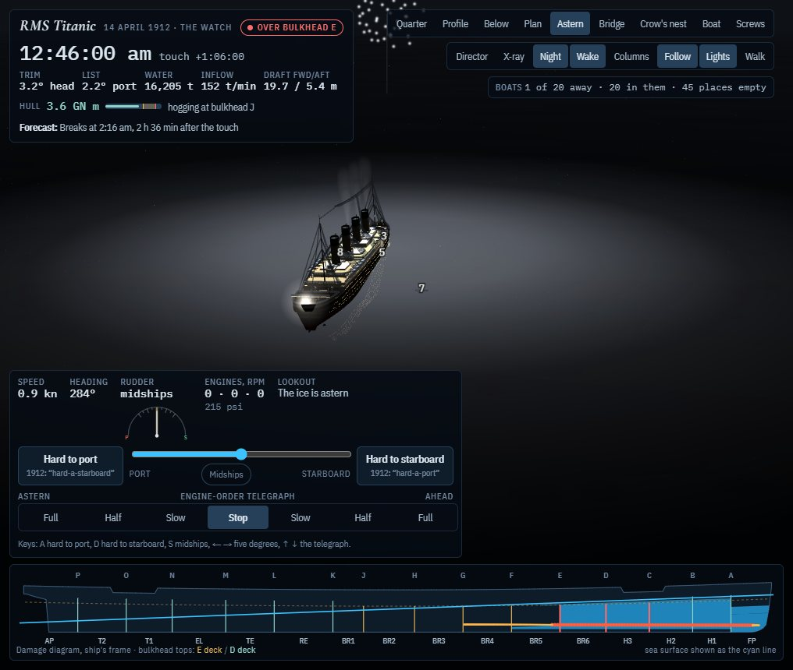
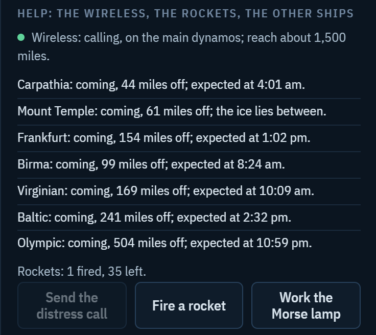
On the 1912 orders the wireless and the bridge went like this:
| Time | On the wireless and the bridge |
|---|---|
| 12:05 am | The captain to the wireless room: send the call for assistance. The operators wait for the position. |
| 12:27 am | CQD: struck a berg, her position. The operators keep calling. |
| 12:37 am | The corrected position is sent (Boxhall's). |
| 12:37 am | Carpathia answers: 46 miles off. |
| 12:38 am | Sinking; cannot hear for the noise of steam. |
| 12:40 am | Carpathia: coming; she expects to be with you at 4:01 am. |
| 12:46 am | A rocket goes up from the starboard socket, 1 of 36 (one every few minutes after it). |
| 12:57 am | SOS: the new call goes out with the old. |
| 1:14 am | Going down fast at the head; get your boats ready. |
| 1:48 am | Engine room flooded. |
| 1:48 am | A rocket goes up from the starboard socket, 8 of 36. |
| 1:59 am | The captain releases the operators; Phillips stays at the key. |
| 2:02 am | Come as quickly as possible: the engine room is filling up to the boilers. |
| 2:17 am | The wireless is silent: the sea is in the wireless room. |
| 2:19 am | The wireless is silent: she has gone. |
The page's own log on the 1912 orders. Left out: 6 rockets between the first and the last, and 12 answers from the other ships.
The other ships are placed where the research put them on the night, with their speeds, their operators' hours and the time each took to get under way:
| Ship | Off at the start | Speed | Hears her | At her end |
|---|---|---|---|---|
| Carpathia | 46.5 miles | 13.6 kn | 12:37 am | coming, expected at 4:05 am |
| Californian | 18 miles | 13 kn | – | heard nothing |
| Mount Temple | 49.5 miles | 11.5 kn | 12:27 am | coming, the ice between |
| Frankfurt | 154 miles | 12.5 kn | 12:27 am | coming, expected at 1:01 pm |
| Birma | 100 miles | 13 kn | 12:27 am | coming, expected at 8:24 am |
| Virginian | 170 miles | 18 kn | 12:27 am | coming, expected at 10:09 am |
| Baltic | 243 miles | 17.5 kn | 12:27 am | coming, expected at 2:35 pm |
| Olympic | 505 miles | 22.7 kn | 12:27 am | coming, expected at 10:57 pm |
Distances from her wreck, and speeds, as core/readers/world.js places the ships; the last two columns are the page's 1912 night.
Carpathia, 46.5 miles off at 13.6 knots, hears the call at 12:37 am and is expected at 4:05 am, 265 minutes after the touch. Californian, 18 miles off, hears nothing: her operator had turned in. A call made sooner brings Carpathia sooner; so do miles made good towards her.
Walk, at the end of the row of display buttons, puts you on her decks: an eye 1.7 m above E deck amidships, in her own frame, so that her heave, her trim and her list carry you while down stays the world's. As she goes down by the head the deck ahead becomes a hill and the horizon tilts. The W, A, S and D keys walk, the arrow keys turn and walk, Q and E take you down and up a deck where there is one, Shift runs and Esc leaves; drag to look about. On a phone a pad of buttons does the same. While you walk the page holds her own pace, and gives yours back when you leave. At the flag the walk ends.
What you meet is the model's: her side where her hull is; her watertight bulkheads on every deck below their tops, with their doors open to you only while the model has them open; and the water of each of her 64 spaces at its own level, the levels the X-ray hull draws, with the bunker's and the peak tank's water where they stand. A pad at the lower right of the stage says where you are: the deck, the compartment and the side, and the water at your feet, or that you are under it, or that her lights are out. Its buttons walk, turn, go down and up a deck and leave. Water to the knees slows you.
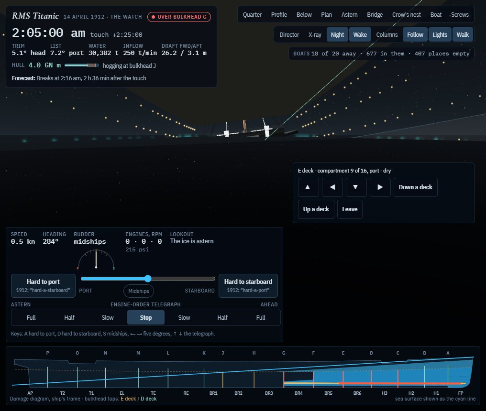
This is a first stage. Each deck is open floor from side to side, without its rooms. Her rooms are read from the deck plans into sourced tables, all nine decks from the orlop to the Boat deck, each room checked against a 1912 original where one could be reached (chapter 10), but the walk does not draw them yet. A key takes you up or down a deck where you stand, without stairs. Where the model gives a bulkhead's doors no place, they stand on her centreline, or a third of her half-breadth out to either side. The lines, the colours, the water's look and the dark are appearance.
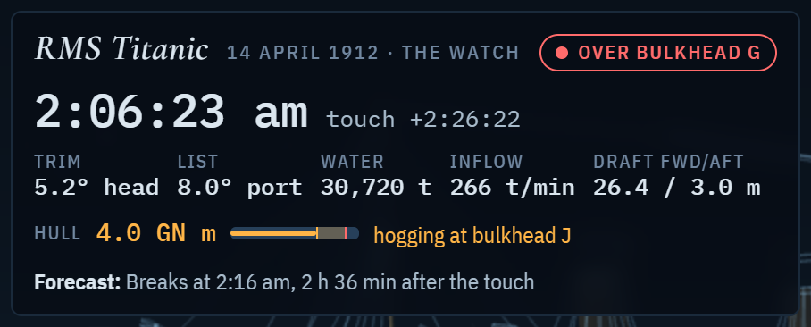
As her bow fills and her stern rises out of the water, her hull bends: her middle carries the weight of both ends. The Hull line in the readouts gives the bending moment where it is greatest over boiler room 1, where she broke, in GN m, and says where it is. Its bar marks the range the studies give for what her hull could bear there, 4.0 to 5.4 GN m: teal below it, amber within it, red past it. In the X-ray hull a band round her shows the same station in the same colour. Nothing breaks in this model yet: the gauge only shows where the bending stands against what she could bear.
On the 1912 orders the gauge enters the range at 2:11:15 am. On the 1912 damage (the preset, the model's calibrated run), read on every step of the page's own run from 2:10 am:
| On the 1912 damage | Ship's time | Trim | GN m |
|---|---|---|---|
| Enters the studies' range (4.0 GN m) | 2:10:39 am | 6.6° | 4.00 |
| 11° of trim: the record's break begins | 2:16:33 am | 11.0° | 5.12 |
| 13° of trim | 2:16:51 am | 13.0° | 5.49 |
| 17° of trim: the record's break at the latest | 2:17:11 am | 17.0° | 5.87 |
| The greatest moment | 2:17:21 am | 20.9° | 5.97 |
So the record's break, between 11 and 17 degrees of trim, falls at 5.12 to 5.87 GN m on this model's curve: inside the range. Intact she bends at 0.89 GN m.
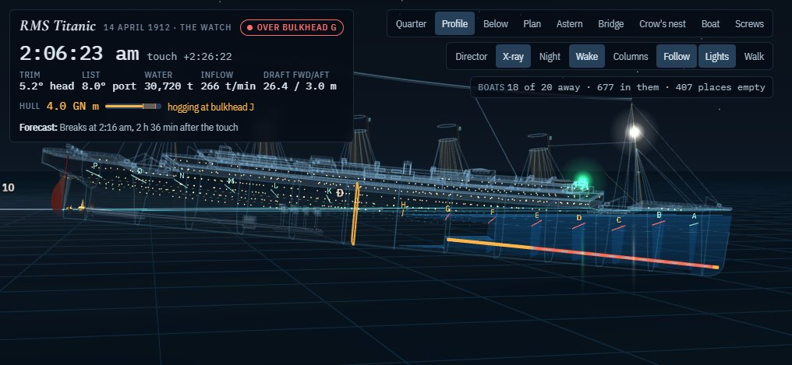
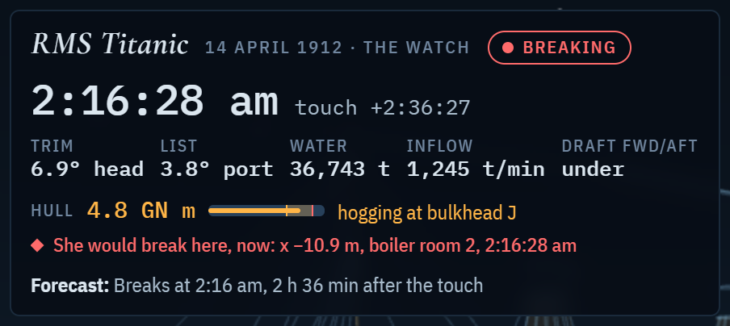
The studies' range is a figure for one place. The model also works out what her hull could bear at every station along her, in bending and in shear, from her plates and the riveted joints between them, and holds the gauge's bending and shear against it as she settles. The first time the two meet anywhere along her, a red line appears under the gauge: She would break here, now, then the station in metres forward (+) or aft (−) of amidships, the space it lies in, and the ship's time. In the X-ray hull a red ring marks the place. Hold the pointer over the line for the figures: the bending moment against what the hull could bear there, the shear against what it could carry, her trim and her list.
Nothing breaks there. The model carries on as before, and her last minute is still a plunge: the line only marks where and when her own loads first reached her strength. In this build, on the 1912 damage and on the 1912 orders alike, it comes over boiler room 2, a few metres forward of boiler room 1 where she broke, and about two minutes before the record's break; nothing in her strength was tuned to put it there. It shows on a damage preset as on a watch.
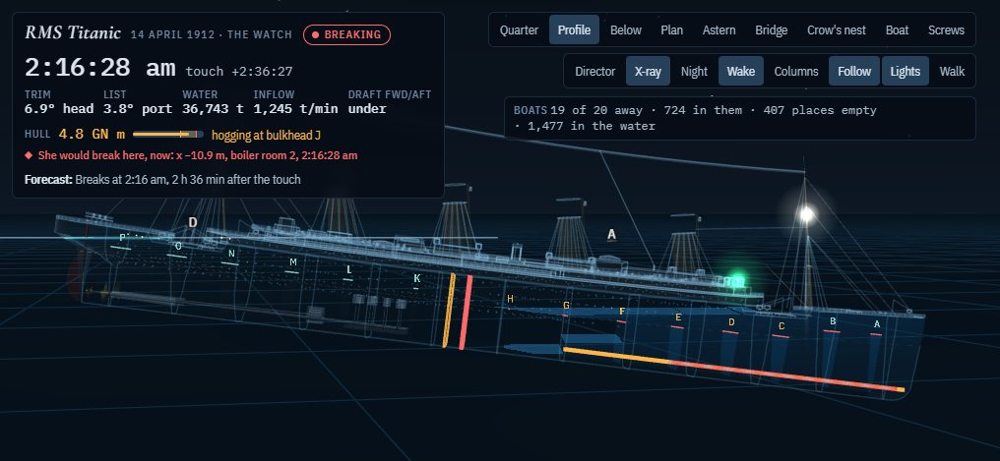
Her lights go out at 2:18 am (the steam mains broken), and on the 1912 orders she founders at 2:19 am, 158.9 minutes after the touch. The card on the stage then says what happened (chapter 5).
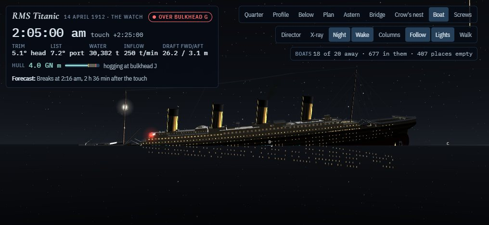
When she founders the page does not stop. From the flag the model takes her as two pieces, her bow and her stern, cut over boiler room 1 where she broke, and carries each 3,790 m down to the bed: each moved by its weight, by the water and the air in it, by the water it must push aside and the water's drag on it, and at the last by the mud. The status stays Foundered, the ship's time runs on, and the stage follows the fall, on a watch and on a damage preset alike.
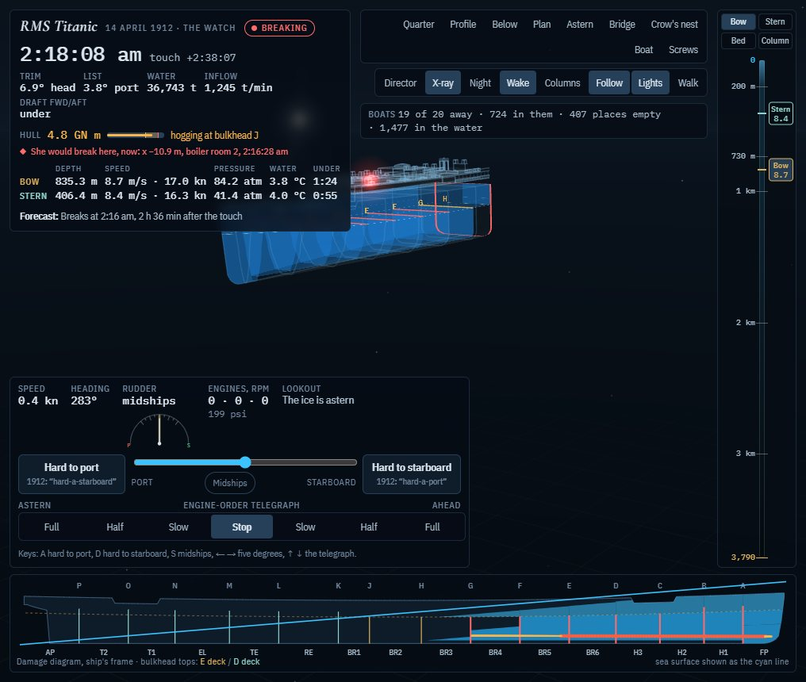
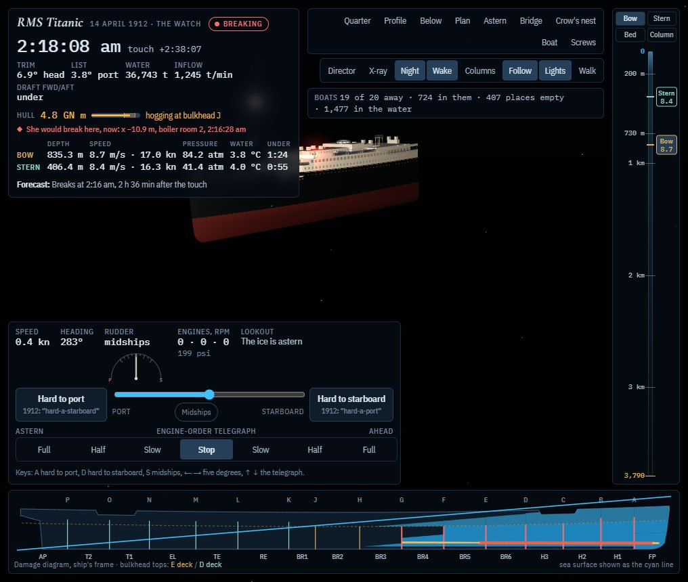
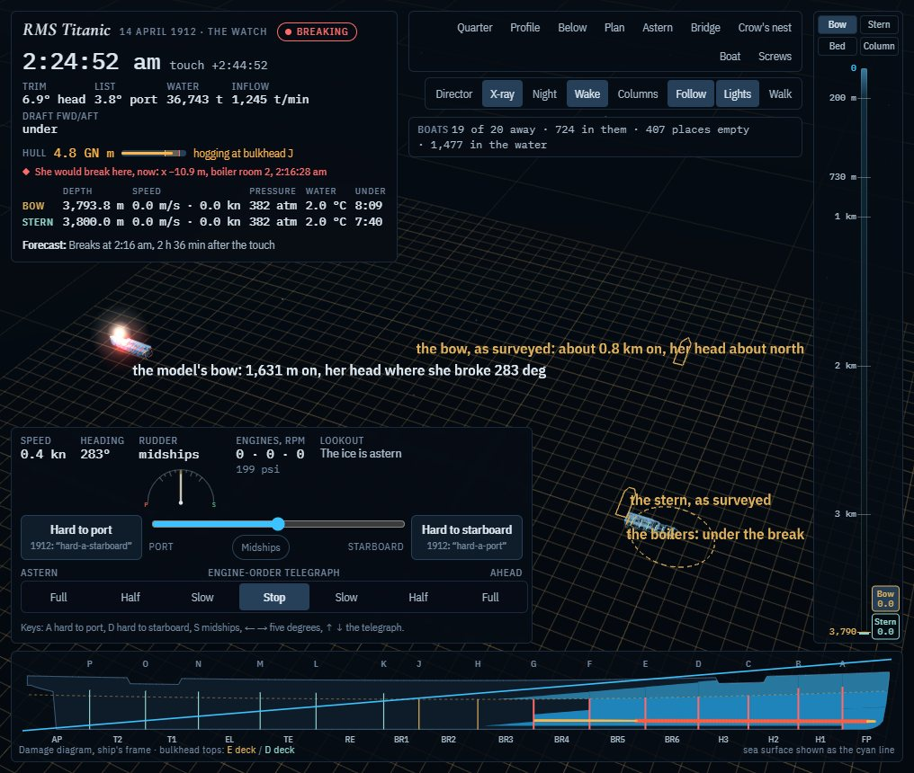
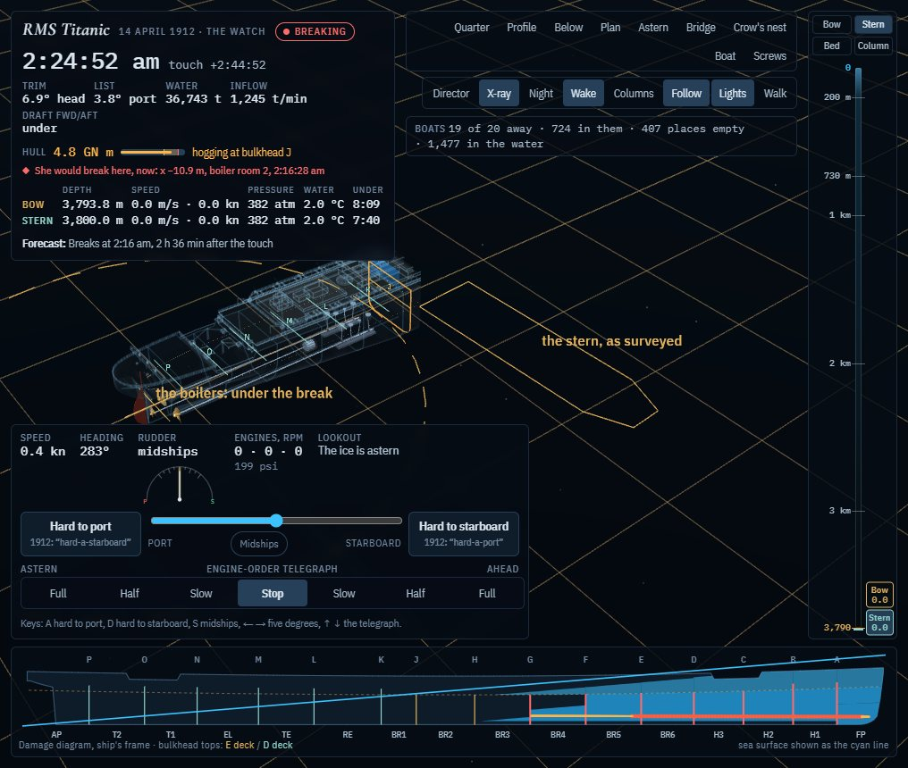
Each piece's place and attitude, its depth and speed, the sea's pressure and temperature, the bed and its slope, and the moments each piece goes under, strikes the bed and comes to rest are the model's. The rest is appearance. In the X-ray look the fall is drawn in the page's own colours. In the Night look, where nothing could have been seen at that depth, a lamp hangs 150 m off the piece you are with ("a lamp that was not there") and the water darkens as she goes down. In either look specks stand in the water so that her speed shows. Her torn ends are drawn flat, and the water drawn in her is what the model held at the flag. No funnel rides down on either piece, as none stands on the wreck. Her first funnel falls before she founders, at about 2:15 am, when the model's own sea reaches its seat, as survivors saw it fall under its own weight; the second also fell at the surface and the third at the break, so the page draws none from the fall's first frame (when the fourth went is a bet). The foremast is laid back across the bow when the bow strikes the bed, its crow's nest on it, as the wreck has it (Ballard, 1987), and the mainmast, which no part of the wreck has, leaves the stern when the stern strikes. Those moments are the drawing's bets; the record has the end state only.
Could any order given after the ice have kept her afloat until Carpathia was alongside? A search put the question to this model (its note is docs/research/RESULT_carpathia_search_v3_2026-11-21.md): from a minute after the touch on the 1912 orders, it tried 3,667 nights of orders to the doors, the engines, the fires and the pumps, and kept the best. The note answers in its own words: Not on this model, and by a wider margin than v2. (its v2, run on the model of edition 1.5, found more than twice the gain). Nothing here says she could have been saved. The search is the model's answer as it stood on 21 November 2026, and the repository will run it again when the model's calibration is renewed.
| After the touch | The order |
|---|---|
| 1 min | Boiler room 4's ash-ejector pump put on boiler room 6 |
| 4 min | The pumps handed back to the engineers |
| 28 min | Engines: full astern |
| 31 min | Every free pump that can reach boiler room 6 put on it |
| 32 min | Every free pump that can reach boiler room 4 put on it |
| 58 min | Engines: stop |
| 68 min | Raise the doors in bulkhead F by hand |
The best night of the 3,667 the search tried: its orders after the 1912 orders, which it keeps to a minute after the touch.
Besides the watch, the Run tab's cards load damage cases that start at the collision, with the ship stopped. They are the cases the flooding model was built and checked on, and a hull with no damage for your own.
The cards, as the page lists them, with what this build's model makes of each:
| Card | What the card says | In the model |
|---|---|---|
| The watch, 14 April 1912 | You have the bridge at 11.39 pm: 22½ knots, course 266°. When the lookout rings three bells, the wheel and the telegraph are yours. The ice makes the damage. | On the 1912 orders: founders at 2:18 am, 2 h 39 min after the touch |
| Another night | A berg somewhere ahead, drawn from a seed: its size, its place, how far off it is seen. The same seed gives the same night. | Whatever the seed and your orders make of it |
| Titanic, 14 April 1912 | Iceberg damage along the starboard bow: six compartments holed, about 8.8 sq ft in all (Wilding estimated 12), shared out as Hackett and Bedford found; boiler room 5 holed only inside its forward bunker. Watertight doors closed from the bridge; boiler rooms 5 and 4 pumped as they were. | Founders in 2 h 38 min |
| Four forward compartments | Forepeak and holds 1-3 open to the sea. Wilding testified she would have floated like this. | Floats, 2.1° by the head |
| Five forward compartments | Add boiler room 6. Water reaches E deck at bulkhead E and the compartments fill one after another. | Founders in 2 h 28 min |
| Olympic and HMS Hawke, 1911 | Rammed near the stern on the starboard side. Two after compartments flooded; she returned to Southampton. | Floats, 0.7° by the stern |
| Britannic, 21 November 1916 (approx.) | Mine on the starboard bow, six forward compartments flooded through failed doors, bulkheads raised to B deck, about 25 portholes open. | Founders in 49 min |
| Undamaged hull | No damage. Switch to the hole tool and tap the hull below the waterline. | Floats until you make a hole |
Pause stops the clock and Play starts it again; Space does the same. Restart from collision, or R, starts the run again with the damage it has now; on a watch the button reads Restart this watch. The speed buttons run the model 1×, 10×, 60×, 240× or 900× faster than real time. The tick box Stern light shows the light at her stern: photographs suggest she had one, though the rules of 1910 did not ask it of a steamer.
A damage preset has no watch, so the boats, the reports and help do not appear on it; the hull gauge, the mark of where she would break, the card at the end and her fall to the bed do. When a preset founders the card says when, and when she lies steady with water aboard it says she floats; This run again starts it afresh. The 1912 damage founders at 2:18 am, 158.3 minutes after the collision. After the flag the clock runs on through her fall, and once both pieces lie on the bed the play button reads On the bed (chapter 6).
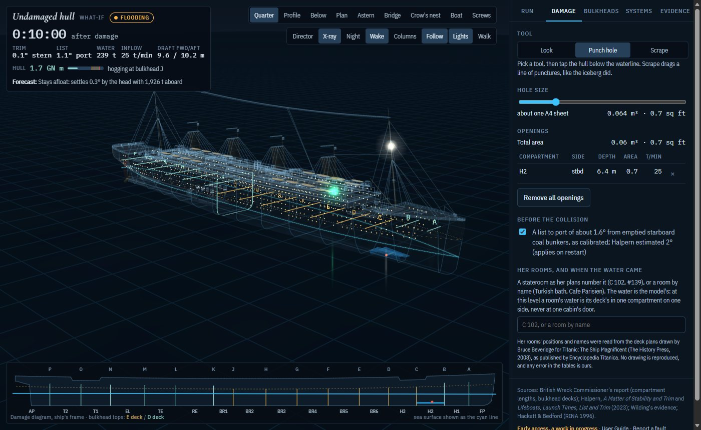
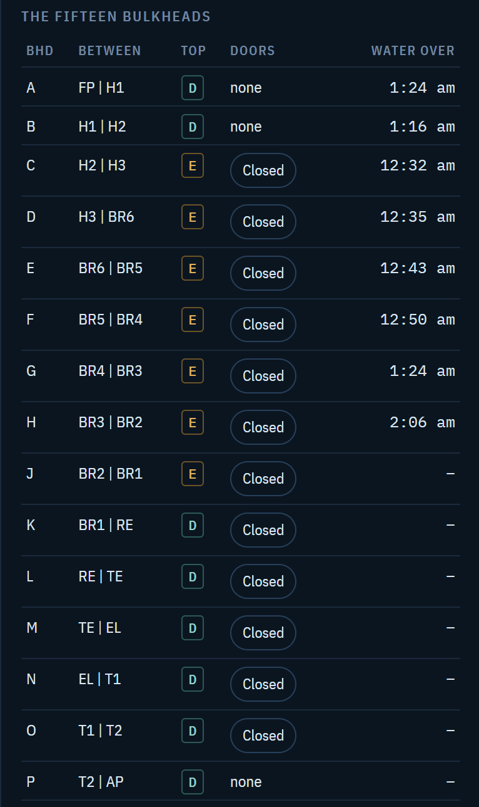
Each of these changes the 1912 damage. The page makes the first four: the × beside an opening's row on the Damage tab, and the bulkhead height. The last is in the note below. The model's answers come from the repository's validation run, the same run the Evidence tab shows:
| Case | The record | The model |
|---|---|---|
| No damage in boiler room 5 | Wilding: she still sinks, slower | Founders in 3 h 12 min |
| The damage stopping at hold 3 | Four compartments: she floats | Floats, 2.1° by the head |
| Every bulkhead to D deck | Wilding: it would not have saved her | Founders in 2 h 47 min |
| Every bulkhead to B deck | Wilding: she would still go down | Founders in 5 h 20 min (disagrees) |
| The watertight doors left open | Debated | Founders in 2 h 50 min |
Her machinery depends on itself, so a failure spreads. The Systems tab shows each link and its state now: green when it works, amber when it is short, red when it has failed, grey when it is idle.
Coal feeds the fires in six boiler rooms. Their steam drives the two reciprocating engines and the wing screws. The engines' exhaust drives the turbine and the centre screw. The same steam works the steering engines that move the rudder, the dynamos that light her, and the pumps. Water breaks the chain where it reaches: at a room's furnaces, at an engine's crankshafts, at the dynamo flat. As her stern rises, the screws and then the rudder leave the water.
| Link | Needs | Fails when |
|---|---|---|
| Coal | Coal in the bunkers | The bunkers run empty |
| Fires | Coal, and a dry stokehold | Water reaches a room's furnaces; the bunkers run dry; the stokers draw them |
| Steam | The fires | Fewer fires burn than she uses; the steam mains break as she rises steeply |
| Engines | Steam, and a dry engine room | Water reaches the crankshafts; the steam falls below what they need |
| Turbine | The engines' exhaust: ahead, at Half or Full, both engines above 40 rpm | Its room floods |
| Screws | The engines, and water round the blades | Her stern rises and lifts them out |
| Way | The screws: water moving past the rudder | She stops; the rudder then has nothing to work on |
| Steering | Steam, way on her, and the blade under water | No steam: the rudder stays where it is |
| Dynamos | Steam, and a dry dynamo flat | She goes dark; the emergency dynamos on D deck keep her emergency lights a while |
| Doors | Current, for the bridge's switch | In the dark only their floats and levers drop them |
| Pumps | Steam; no current | The room a pump stands in floods; the steam fails |
| Room | Boilers | Furnaces | Ends lit on the night |
|---|---|---|---|
| Boiler room 6 | 4, double-ended | 24 | 8 of 8 |
| Boiler room 5 | 5, double-ended | 30 | 10 of 10 |
| Boiler room 4 | 5, double-ended | 30 | 10 of 10 |
| Boiler room 3 | 5, double-ended | 30 | 10 of 10 |
| Boiler room 2 | 5, double-ended | 30 | 10 of 10 |
| Boiler room 1 | 5, single-ended | 15 | 0 of 5: cold |
| In all | 29 | 159 | 48 of 53 |
Draw beside a room orders its stokers to draw the fires; Draw every fire orders all of them. A room's fires take about 20 minutes to draw: the source says room 5's thirty furnaces took fifteen to twenty men about twenty minutes. The steam already raised carries the load a while longer. Then, as the pressure falls, the engines stop first, then the dynamos, then the steering gear. On a watch the order goes in the log with the helm's and the telegraph's.
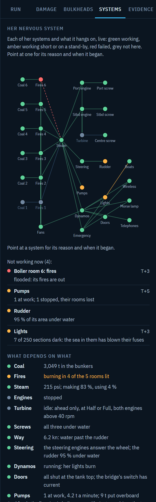
As loaded gives her the coal of the night, about 3,050 tons: worked out from what she took aboard at Southampton and what she burned on the way. 2 h left and 15 min left give her that long at full firing, about 750 tons a day. The choice applies when the run restarts, and to the next watch. With a room's bunkers empty its fires burn down in about 15 minutes (a guess).
Her lights are the dynamos' output, not a clock. Water at the dynamo flat, or too little steam, puts the main sets out. Two small emergency dynamos on D deck then keep about 15 % of her light (a guess), until the sea reaches D deck where they stand. When the main dynamos stop, so does the current that drops the watertight doors from the bridge: in the dark the bridge's switch does nothing, and only each door's float, or its lever worked by hand, will drop it.
Her steam pumps reach the bilges of the boiler rooms and the engine rooms, and of the holds while their valves can be worked: the valves stood in the firemen's passage, lost once it floods, about five minutes after the collision in 1912. The peaks have no suctions.
| Pump | Tons of water an hour |
|---|---|
| Boiler room 6's ash-ejector pump | 150 |
| Boiler room 5's ballast-and-bilge pump | 250 |
| Boiler room 4's ash-ejector pump | 150 |
| Boiler room 3's ballast-and-bilge pump | 250 |
| Boiler room 2's ballast-and-bilge pump | 250 |
| A ballast pump in the reciprocating engine room | 250 |
| The other ballast pump in the reciprocating engine room | 250 |
| A bilge pump in the reciprocating engine room | 150 |
| The other bilge pump in the reciprocating engine room | 150 |
| The turbine room's bilge pump | 150 |
| In all | 2,000 |
That is 1,700 tons an hour from the ballast and bilge pumps, and 2,000 with the two ash ejectors (an estimate of Wilding's). All of them run on steam; none needs the dynamos. They give nothing below 30 psi and their full rate above 80 psi (a guess at direct-acting pumps).
On a watch the engineers work them as the model guesses they would: a room's own pumps go on 5 minutes after water comes in, and pumps from rooms still dry are led to it through the bilge main 30 minutes later. A pump stops for good when the room it stands in floods 2.3 m deep: its crew has gone. The 1912 damage preset carries the night's own schedule instead: boiler room 5's pump from 10 minutes, and boiler room 4's from 30. Against the 1912 damage they put about 367 tons overboard and keep her afloat 2.48 minutes longer; every pump able to reach the bilges, never abandoned, would buy 21.12 minutes (the repository's experiment e22). Against a small leak they can hold a room dry.
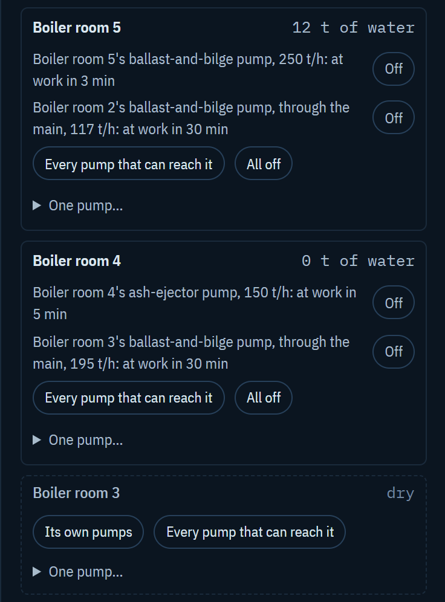
The section Pumps on the Systems tab says who has the pumps, and lists each room with water in it or pumps on it: its water, what its pumps put out, and each pump on it, at work or at work in so many minutes. On a watch it lists every other room an order can draw from as well, dry and in a quieter form, so that pumps can be put on a room before the water reaches it; and it takes your orders:
An order takes the pumps from the engineers, who then wait for yours. A room's suctions and the two mains limit what can be drawn from it; none works without steam, and a pump stops when the room it stands in floods. An order that cannot be carried out changes nothing and says why. Every order goes in the watch's log, and the forecast runs the watch on with it.
On the 1912 orders, Every pump that can reach it on boiler room 4, still dry, and then on boiler room 5, 3 minutes after the touch, moves the forecast from 158.95 to 160.28 minutes after the touch: 1.33 minutes more. What the best orders a search found buy is in chapter 6, under "The Carpathia question".
The Evidence tab sets the run beside the record: her trim by the head, her list and the water aboard, against the eyewitness reconstruction, with the forecast to the end. Below them, the timeline check and the cases the fit never saw.
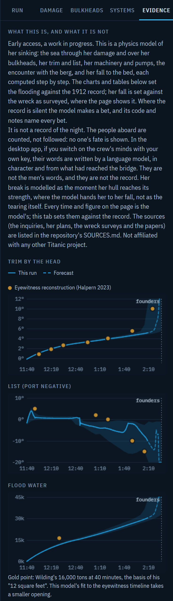
The fit's main evidence. Halpern's reconstruction of her trim from the eyewitnesses (core/scenarios.js), against the model's calibrated run of the 1912 damage (out/validation.json):
| Time | Eyewitness reconstruction | The model |
|---|---|---|
| 11:55 pm | 0.8° | 0.9° |
| 12:10 am | 1.8° | 1.7° |
| 12:25 am | 2.6° | 2.3° |
| 12:55 am | 3.2° | 3.3° |
| 1:20 am | 4.0° | 4.0° |
| 1:50 am | 5.5° | 4.9° |
| 2:15 am | 10.0° | 8.1° |
The reconstruction is itself an estimate: Halpern read her trim from what survivors said they saw, the rows of ports going under and the well deck awash, at times they gave.
The model's list begins as the coal list of the evening, 2° to port. The sea then comes first into the empty starboard half of boiler room 5's forward bunker, and on the calibrated run she lists 2° to starboard five minutes after the collision, and little by 11:50 pm, where witnesses saw 5° to starboard. Once the bunker gives way, about an hour after the collision, the coal list and the free surface of the water in her take her to port: 4° to port at 1:50 am and 8° to port at 2:05 am, where witnesses saw 10° to 15° to port. On a watch the commutator reads that list, a few degrees short of what the officers reported. The candidates for the rest are worked out in the repository's design notes for her list: water running aft along Scotland Road, and the port gangway door ordered open.
The events witnesses saw, against the times the model gives for them, as the Evidence tab lists them:
| Event | Witnessed | Model |
|---|---|---|
| Water seen pouring down from E deck at the Turkish baths (bulkhead F) | 12:55 am | 12:57 am |
| Second row of ports under the forecastle submerged | 1:20 am | 1:16 am |
| Forward well deck awash | 1:50 am | 1:48 am |
| Forecastle head going under | 2:05 am | 1:59 am |
| Bridge goes under; crow's nest at the waterline | 2:15 am | 2:16 am |
| Foundered (stern under) | 2:20 am | 2:18 am |
| 16,000 tons aboard (Wilding) | 12:20 am | 12:55 am |
Wilding told the inquiry that 16,000 tons came in during the first 40 minutes, and from that he put the opening at 12 square feet. The model reaches 16,000 tons only after 75 minutes: the eyewitness timeline fits a smaller opening, 8.8 square feet (0.82 m²).
The repository also keeps the record as a ledger of 26 observations, each one witness's sight of one thing at one time: the sea at a hatch or a stair, the water in a room, a sounding, her list, the tons aboard, an event. Each is read against the run of the 1912 damage, and every row is a check, printed and never scored: some rows are marked for the model's next calibration, some are held out to judge that fit, and some are only reported. At this edition's numbers 8 of the 26 lie in their band. The largest misses are her list changing sides, which the model has 56 minutes after the collision and the record between 85 and 110; the water aboard 45 minutes after it, 18 % short of Weeks and Halpern's reconstruction, 13,717 tons; and the sea at Poingdestre's quarters, which reaches the mark he saw 11 minutes late. The whole ledger is out/ledger_1912.txt.
Four numbers were fitted to the 1912 record, on the damage preset and the reconstructed watch together. The first row is that fit; the others were no part of it, and nothing was changed for them:
| Case | The record | The model |
|---|---|---|
| Titanic, 1912 (the fit) | Sank in 2 h 40 min | Founders in 2 h 38 min |
| Forepeak and holds 1 to 3 open | Wilding: she would float | Floats, 2.1° by the head |
| Add boiler room 6 | Wilding: she sinks | Founders in 2 h 28 min |
| Olympic and HMS Hawke, 1911 | Two compartments flooded; she reached port | Floats, 0.7° by the stern |
| Britannic, 1916 (approximate) | Sank in about 55 min | Founders in 49 min |
| Britannic with her portholes shut | Built to float with six compartments flooded | Floats, 8.0° by the head |
| Titanic, bulkheads to D deck | Wilding: it would not have saved her | Founders in 2 h 47 min |
| Titanic, bulkheads to B deck | Wilding: she would still go down | Founders in 5 h 20 min (disagrees) |
The B-deck case is the one disagreement with a witness. Wilding thought she would still have gone down; the model floats her, as the later design of Britannic claimed for her own six forward compartments. Britannic's hull is taken as Titanic's, a little narrower, and which of her bulkheads went to B deck, and where her open ports were, are assumptions.
The validation table prints, for each case that floats, how far the lowest top of a bulkhead with water on one side and none on the other stands above the sea. Olympic after the Hawke keeps 6.26 m at bulkhead O, but two cases float by little: 0.78 m at bulkhead F for Britannic with her portholes shut, and 0.94 m at bulkhead D with the four forward compartments open. Those are edges, not margins: a small change in an assumption could turn either case.
Each piece below is a model with numbers in it. Where a number comes from a source the code names the source; where it had to be guessed the code says so. This chapter says which is which.
Her hull is a shape fitted to the builder's hydrostatics, cut into 4,408 vertical columns. Every quarter of a second the model adds up her buoyancy and the water in her over those columns, at the pose she has at that moment, and moves her as one rigid body in rise, trim and list. Water moves between the 64 spaces and the sea through orifice and weir laws: through holes, doors and deck openings, and over the tops of the bulkheads. The two halves of an open space share one water surface.
Above B deck stand the three tiers of her superstructure. They belong to the spaces above E deck, so they hold her up while they are dry. Their windows, and the entrance doors and domes of the two grand staircases, keep the sea out until the water on them reaches their strength: about a metre at the sill of a wooden door, a metre and a half on a window, half a metre on a dome's glazed cover. A dome goes sooner than that, from below: once the doors of its stair hall are under water, the air shut in under it lifts the cover's panes. On the 1912 damage the forward dome gives way about a minute after the sea reaches the bridge. No survivor saw a dome give way; it is a reconstruction, in the model as in the paintings and the film.
Four numbers were fitted to the eyewitness record: the total area of the iceberg's damage (0.82 m², about 8.8 square feet, shared out over six compartments as Hackett and Bedford give its openings: 4.8, 11.9, 24.6, 26.2, 22.2 and 10.3 % from the forepeak aft, in the table of Felkins, Leighly and Jankovic, 1998), and three for the water's paths: along E deck, down through it, and through the deck above once it is under water. The fit holds the 1912 damage's timeline and the reconstructed watch's foundering together, both within 157 to 160 minutes. It includes the pumps as they were worked on the night, and the superstructure with its windows and staircases. Along E deck, over the bulkheads that stop there, the water runs aft by two passages at their widths on the deck plans, which the fitted number for that path multiplies: Scotland Road to port, 2.24 m between its walls, and the passage to starboard, 1.40 to 1.49 m.
Two spaces hold smaller ones. With her coal list to port, the empty starboard half of boiler room 5's forward bunker is a pocket of its own: the openings the ice made inside it fill it, its door leaks into the stokehold, and it gives way once the water in it stands high enough, emptying into boiler room 5, on the 1912 damage about an hour after the collision. Until then the stokehold's plates stay dry, as the leading stoker Barrett, who was there, told the inquiry. At her bow, the forepeak's lowest part, from the keel to the orlop deck's watertight flat, is her peak tank, a pocket that never gives way: the ice's openings there fill it, and the sea rises into the forepeak above only by the tank's vent, a 4-inch pipe led to G deck (its size is a bet). So the forepeak stays dry for its first minutes, as the British inquiry's report has it and as the lamp trimmer Hemming found its stores soon after the jar; on the 1912 watch the tank is full some 22 minutes after the collision, and the water comes up its vent from then on.
Her rooms are not yet part of the flooding. The model can cut each of its 64 spaces at her decks into 250 slabs, one deck's space in one compartment on one side, and share a space's water out among them by its own rule. Her rooms themselves are read from Encyclopedia Titanica's free deck plans into tables of facts, 572 rows on all nine decks from the orlop to the Boat deck, each with its source and its check against a 1912 original where one could be reached (The Shipbuilder's plates). Neither the flooding nor the page uses them yet: inside a space her decks are open floor. What the tables find against the model, such as two of her bulkheads standing a little aft of the model's and her hull too narrow at her ends above E deck, is the next work for her rooms.
A standard manoeuvring model (the MMG model) with her hull, three screws and one rudder. Four numbers are fitted to the trial record the three sister ships share: Olympic's two points of turn in about 37 seconds, Titanic's turning circle of 3,850 feet, circles that barely change with speed, and the crash stop of about 3,000 feet, run as the trial was, with the engines reversed more slowly than usual. Her resistance follows Holtrop's method, and her screws going astern follow the Wageningen B-series' measurements. The screws' places were measured on a side plan of 1911.
The berg is a free body of ice. Where her side presses into it, the plating dents against the ice's crushing pressure, and the riveted seams open once a dent passes a set depth. The opened area is fitted so that the 1912 watch makes the same opening as the calibrated damage, shared out over her compartments the same way: one fitted factor for each, since the contact opens every torn metre alike. Head on, her bow crushes at a force that rises with the depth already crushed, from crushing laws for ship sections. The berg's face stays rigid in a stem strike.
These are the least certain numbers in the simulator: the plating's strength, the berg's mass, the seam gap for each metre of dent and the crushing force are all guesses with a physical meaning. And the 1912 point grazes the edge of a stem strike: a metre either way changes the damage a good deal.
Where the tear ends aft is fitted to the record. On the 1912 orders it ends inside boiler room 5's starboard forward bunker, about two feet abaft the bulkhead, where the British inquiry and the leading stoker Barrett put that room's damage, and the stokehold's own side stays whole. The rule covers that room's side only and rests on the 1912 record: on any other night it is a bet. Farther aft, on every night tried, the ice only dents her plating (docs/research/RESEARCH_br5_damage_extent_G6_v1_2026-11-20.md).
While she moves, the sea's level at each hole is raised by the share of her speed that strikes it head on, and near the stem by her bow wave. Stopped, it adds nothing. The 1912 damage is mostly slits along the flow, so for the night as it happened speed changes little: about a third of a minute. A bow crushed head on faces the flow, and takes the whole of it. The shares are guesses: nobody measured the pressures on this hull.
Her wake is the sea's answer to her hull. The hull is a sheet of sources on her centre plane (Michell's thin ship), driven by her speed, her drift and her turning; the sea answers as linear waves on deep water, each wave travelling at its own exact speed, in two squares of sea that follow her, about 3 km across for the long waves and 1 km for the short. Thin-ship theory makes her waves too high, so their heights are scaled until the energy they carry away is what Holtrop's method, the one her resistance follows, spends on making waves. The white water is laid where that sea is too steep to stand, off her bows and in her screws' races, and left where it was made. How much each cause makes and how long it lasts are guesses. The wake reads her motion and feeds nothing back: a watch has the same fingerprint with it as without.
The method has been run unchanged on three hulls whose waves were measured in tanks. On the KRISO container ship its waves fall where they were measured, along the hull and in two cuts out to 35 m from its side, at about two-thirds of their height, and farther out they arrive early. On two hulls without a bulb, the Series 60 and Wigley's, the waves along the hull are again where they were measured; the Series 60's troughs amidships come out shallower than its tank's, about 0.6 as deep at her speed. Her bow wave against her plating follows a law: the height Noblesse and others (2008) give for a stem of her half-angle, 21°, measured on Bob Read's plans of Olympic. It replaced a fixed factor that no one value could make right (the Series 60 wanted 3.69, Wigley's hull 2.76, her stem about 7), and at full speed it raises her crest from 3.1 m to 5.7 m. The white water keeps a factor of its own. The notes are docs/research/RESULT_k6_kcs_benchmark_v1_1_2026-11-20.md and the Series 60 and Wigley results beside it.
The pumps run on steam, at rates from the British inquiry's report, from the bottoms of the rooms with suctions. When the engineers started them on the night, and which they led where, is a guess for each room. The watertight doors fall shut over 25 seconds once released, by the bridge's switch, by their floats or by hand.
The boats, the reports, help and the hull gauge are readers: modules that read the watch after each step of the model and keep an account of their own beside it. None writes into the flooding, the motion, the ice or the plant, so a watch has the same fingerprint with every reader and with none, and the repository's suites hold each of them to that.
What her hull could bear is worked out from her cross-section at each station: the keel and the bottom, the side plating, the double bottom, and B and C decks, which carried her strength, each plate with its thickness and each riveted joint with its strength, from the sources the code names (Mengot, Walker in 1912, Halpern, Wilding, the Marine Forensics Panel, among others), with the funnels' uptakes cut out of the decks. Smith's method of progressive collapse then bends the section further and further, adding up what each plate still carries, until the whole gives way. Amidships her hull could bear about 5.3 GN m with her ends bending down, inside the studies' range, and its bottom gives way first. One figure no source gives, C deck's plating against B deck's, is fitted to the panel's section; nothing was fitted to her strength itself.
At the flag the fall takes over from the flooding model. Her hull is cut in two over boiler room 1 (a rule for now: the break itself, before she went under, is not modelled), and each piece is a rigid body built from the model's own slices: its steel, the water in it (the pockets' water with it), and the air still in it, one pocket that the sea squeezes as it goes down and whose lift acts, slice by slice, through the middle of the part the sea can fill. Each moves in all six ways a body can, its attitude free to pass through any angle. The water acts on it slice by slice: the mass of water it must move with it, the drag of the flow across it and along it, a lift where the flow leaves a torn end, and buoyancy at the density of an April column of sea, which grows with depth. On the bed the mud bears it up until it lies still. The coefficients come from experiments and textbooks, each named in the code; the one number the trials fit, where her weight acts along her, is not used on the page, and the time to the bed is checked against the reconstructions, not fitted to them.
The engine can also keep the two pieces joined at the break, on a hinge that bends, tears and lets go when the force across it passes what is left to hold it. In its trials (out/fall_trials.txt, trial 13), handed over at the onset on the 1912 orders, the joint lets go by shear 18 s later. The page does not use it yet: it still cuts her at the flag. Handing a watch to the fall at the onset is a what-if of the repository's, not of the page: there the night carries the onset's check itself, so the watch's forecast and every copy of it meet the same onset.
The model steps a quarter of a second at a time and adds its sums in a fixed order, so a night replays bit for bit on the same JavaScript engine. It computes its own sine and cosine, exponential and logarithms, tangent and arc tangents, hyperbolic tangent, arc sine and arc cosine, cube root and the length of a vector: fdlibm's routines (V8's for the length) in plain arithmetic, the same in every engine that keeps the IEEE 754 standard and equal to Node's on every value tried. So a browser reckons the night as Node does: in the repository's test the page in Edge reaches the end of the 1912 encounter with Node's own fingerprint, and her fall to the bed takes the model's own functions as well. The power function is the exception, which the model still takes from the engine because changing it moves the calibration. Where two engines part, they part in the last digit, and the night can carry it: a change in the last bit moves the 1912 damage's foundering by up to 1.5 s (the validation table prints that floor), and the 1912 watch's by more than a minute, because one of the engineers' own pump orders there falls on one side or the other of its threshold. The forecast after the ice is a copy of the watch run on, so it gives the watch's own end. Her fall to the bed is reckoned the same way: the same flag gives the same fall, bit for bit.
The website is built into the repository's dist/ folder. Serve that folder with any static web server, for example node tools/serve.js dist 8080, and open it in a current browser: Edge, Chrome, Firefox or Safari. The model runs in the page itself. The same models run without a browser, in Node 18 or later with nothing to install (the browser tests need Node 22 or later, and Edge or Chrome). The page keeps one clock of its own, the time of its frames, which runs on while a watch is paused and to which its timers and notices keep; a browser test can run it frame by frame, so that the test does not depend on how busy the machine is. The repository lists its commands in CLAUDE.md:
| Command | What it does |
|---|---|
node tools/gate.js | THE GATE: every suite, one verdict line each, each suite with a deadline (G16) (about an hour here; one session at a time: C:\temp\titanic-browser-turn.txt); run it before a commit |
node tools/gate.js --deadline-scale 2 | each suite's deadline (three times the longest of its last five PASS times, at least 10 min, kept in out/gate/durations.json), scaled |
node tools/gate_deadline_tests.js | G16: the gate's deadlines on three fixture suites (a hang killed as TIMEOUT, times kept only from a PASS, the last five), and the deadline's floor, factor and longest of five (headless, about 10 s) |
node tools/cdp_tests.js [dist] | G8 and G16: two browser suites launched at once, each on its own port and browser; a page that never answers fails in bounded time; the profile removed (a browser suite: take a turn) |
node tools/gate.js --quick | the fast headless suites and the dist check (about half a minute) |
node tools/gate.js --only night,night_site | just these; --list names them; --sweeps adds the three sweeps; --write refreshes out/ |
node tools/night_scene_site_test.js dist docs/evidence/night_scene | the Night look and the two eyes; the folder is where its six pictures go |
node tools/sound_site_test.js | the ship heard: each sound's level against its number in the model |
node tools/girder_tests.js | the hull girder's gauge: closure, purity, the 1912 finding (about 3 min); girder_site_test.js in a browser |
node tools/strength_tests.js | her strength along her length (Smith's method) and the onset of the break (about 2 min) |
node tools/fall_trials.js | the fall: the free body's trials against closed forms and the wreck (about a minute) |
node tools/night_after_tests.js | the watch past the hand-over (Z3): the fingerprint through the fall, replays to the bed, the readers past the flag (about a minute) |
node tools/walk_site_test.js dist docs/evidence/walk | W0: the walk inside her on the core's own water, in a browser: walls, doors, her side, decks, the water at the feet the core's, no walk after the flag; the folder is where its two pictures go |
node tools/rooms_tests.js | R1: the core's 64 spaces cut at her decks into 250 slabs, the water shared out from the core's own |
node tools/rooms_table_tests.js | R3: her rooms from the deck plans as sourced tables, against the model's bulkheads, decks, tiers and slabs (seconds) |
node tools/deep_site_test.js dist docs/evidence/deep | the deep: the fall from a test feed on a preset, and the real engine on the watch and the presets; its views, strip and readouts, and its eight pictures (about 10 min) |
node tools/wake_spectrum.js | her waves by Michell from her own hull against Holtrop; --bake writes the page's scale into the library |
node tools/wake_tests.js | her wake as a wave field: energy against Michell, wavelength, wedge, the turn, the white water's causes (about 2 min) |
node tools/wake_site_test.js dist docs/evidence/wake | the computed wake in a browser; the folder is where its six pictures go |
node tools/export_ship.js | U0: the ship as numbers for Blender or Unreal -> out/titanic_ship.json (seconds; not tracked) |
node tools/record_night.js 1912 auto [--fall] | U0: the watch step by step -> out/titanic_night_1912.json (about 15 s; not tracked); --fall on to the bed |
node tools/export_tests.js | U0: both files byte-stable, the record's fingerprint the model's alone, values against the model (about a minute) |
node tools/u3_water_tests.js | U3: the water inside her, the model's 64 spaces cut at the record's level, against the model |
node tools/u3_lights.js | U3: her lights going out deck by deck, from the record alone, against the model |
node tools/u3_smoke.js | U3: her smoke and steam as a timeline from the record's plant, against its own events |
node tools/hull_stl.js <out.stl> | her hull as a closed STL for a towing tank (K6; the run sheet: docs/runbooks/K6_tank_on_the_rtx_machine.md) |
node tools/tank_compare.js <export folder> --png <out.png> --txt <out.txt> | any free surface written on a grid against her wave field (K6; the FluidX3D tank is retired) |
node tools/kcs_compare.js <kcs offsets .json> | K6: the field's method on the KCS against KRISO's profile and cuts (the offsets from tools/iges_offsets.js, kept outside this repository) |
node tools/s60_compare.js [--own] | K6: the field's method on the Series 60, a bulb-less hull, against its tank profiles at six Fn (about 30 s; --own adds its own length, about 100 s) |
node tools/wigley_compare.js [--cw] [--local] [--stated] | K6: the field's method on Wigley's hull against its tank profiles (about 25 s) |
node tools/local_flow.js | K6: the hull's local flow, checked against the 2D thin strut (seconds) |
node tools/blender_tests.js | U1: her hull and topsides built in headless Blender from the export, checked against it (about 30 s; needs Blender 5.2, BLENDER=<blender.exe>; not in the gate) |
node tools/blender_spaces_tests.js | U3: the model's 64 spaces as named volumes in headless Blender, each against nodeVmax (seconds; needs Blender 5.2; not in the gate) |
node tools/blender_u3_tests.js | U3: her water, lights, steam and smoke at three times, built in headless Blender and read back off the GLB (about a minute; needs Blender 5.2; not in the gate) |
node tools/people_tests.js | the boats against the launch record; boats_site_test.js in a browser |
node tools/reports_tests.js | the reports to the bridge against the night's script; reports_site_test.js in a browser |
node tools/world_tests.js | the wireless, the rockets, Carpathia; help_site_test.js in a browser |
node tools/carpathia.js --nights 6000 --jobs 6 --variants 40 | W5: the Carpathia search (about 90 min here); progress in out/gate/carpathia; the best night -> out/carpathia_best.json |
node tools/carpathia_tests.js | its acceptance (about four minutes) |
node tools/gate.js --release | the gate with the release suites as well: the User Guide's check |
node tools/build_guide.js | the User Guide: docs/guide/src/*.md -> HTML and PDF (headless Edge, about 10 s) |
node tools/guide_shots.js | the guide's pictures and the page's account of the 1912 night, from dist/ (about a minute) |
node tools/guide_check.js | the guide in step with the page and the repository; --pages DIR to look at every page |
node tools/seams.js | the seams gate: bit-identical at rest (5 s) |
node tools/engine_tests.js | E1 and E2a: the model's own sine, cosine and ten more; no Math transcendental in core/ but pow; eleven frozen hashes (seconds) |
node tools/clock_tests.js | QC C-3: every wall-clock read in site/ on its list (permanent or pending), and the page's clock and its interface (seconds) |
node tools/layout_site_test.js [dist] [picture dir] | C-4: the stage's layout at six sizes in ten states each: no overlay over another, none outside the stage or cut (MUST; about 10 min; a browser suite: take a turn) |
node tools/layout_check.js | C-4: the stage's layout check, its own geometry rows (a second) |
node tools/director_site_test.js [dist] [picture dir] [--real] | the director on the page's virtual clock (about a minute; --real: every row on real time, about 8 min) |
node tools/stairs_tests.js | the tiers above B deck, their windows and the grand staircases: laws, neutrality, the 1912 timetable (about a minute) |
node tools/conserve_tests.js | C3: every validation case's water conserved step by step; no cut, the same bits (about a minute) |
node tools/trials.js | the motion model against the 1911-12 trials (acceptance table) |
node tools/astern_tests.js | the rudder with sternway; headway unchanged to the bit (seconds) |
node tools/encounter_tests.js | the iceberg encounter: acceptance and what-ifs (about a minute) |
node tools/encounter_run.js 220 32 0 22.5 '{}' sink | one night: helm at 220 m, ice 32 m to port, port-around at the touch |
node tools/calibrate_encounter.js | refit the encounter's area constant (a few seconds) |
node tools/night_tests.js | the seeded night and the watch: acceptance (about a minute) |
node tools/night_run.js 1912 auto sink | one watch: seed, then auto | none | seconds after the bells |
node tools/night_sweep.js 200 | how hard the drawn nights are -> out/night_sweep.txt (about 25 min under P3c) |
node tools/night_sweep.js 200 1 night1912 | the same for a level (G1: early, night1912) -> out/night_sweep_<level>.txt |
node tools/build_site.js | dist/ (works without node_modules: keeps the vendored files in dist/); --check: is dist/ current? |
node tools/night_site_test.js | the watch in headless Edge or Chrome, through the real controls (about 3 min) |
node tools/visuals_tests.js | screws, rudder, wake and lights as numbers (seconds) |
node tools/visuals_site_test.js | the same in a browser (about 3 min) |
node tools/topsides_tests.js | the drawn ship as numbers: houses, funnels, masts, davits, domes, the round stern (seconds) |
node tools/topsides_site_test.js | the same in a browser, desktop and phone (about 90 s) |
node tools/systems_tests.js | the ship's plant: each dependency made to fail; intact ship unchanged (about 2 min) |
node tools/systems_site_test.js | the Systems tab and its orders in a browser (about 4 min) |
node tools/validate.js | validation table -> out/validation.json (about 1 min) |
node tools/ledger_tests.js | the epoch's stage A3: every row of the observation ledger (RECORD_1912) read against the 1912 preset, each a CHECK -> out/ledger_1912.txt (seconds) |
node tools/titanic.js | 1912 run against eyewitness trim and list |
node tools/golden.js | golden trace -> out/golden_titanic.json |
node tools/calibrate.js 45 | refit the opening's area and the 3 flow numbers to the preset and the 1912 watch together (D73; about 20 min) |
node tools/build.js | inline everything -> out/titanic.html |
node tools/shot.js 1400 860 4000 shot.png | screenshot the viewer |
| Word | Meaning |
|---|---|
| Trim | Her tilt fore and aft. By the head is bow down, and counts as positive. |
| List | Her tilt to one side, port or starboard. |
| Bulkhead | A watertight wall across the hull. Fifteen, lettered A at the bow to P at the stern, without I. |
| Compartment | The space between two bulkheads: the forepeak FP, the holds H1 to H3, boiler rooms BR6 to BR1, the engine rooms RE, TE and EL, the shaft tunnels T1 and T2, the after peak AP. |
| Decks | Lettered downward from A: B, C, D and E deck are named in this guide. A bulkhead's top reaches B, D or E. |
| Way | Her motion through the water. A rudder needs it. |
| Telegraph | The bridge's dial for engine orders, rung to the engine room. |
| Wing screws | The two outer propellers, turned by the reciprocating engines. The centre screw is the turbine's. |
| Seams | The joints between her plates, riveted. Opened by the ice, they let the sea in along her side. |
| Stem | The foremost edge of her bow. |
| Seed | The number a drawn night is made from. The same seed gives the same night. |
| Fingerprint | Eight characters made from her state at every step of a watch: equal fingerprints, equal watches. |
| Bet | The code's word for a number that had to be guessed, with its reasoning beside it. |
| Reader | A part of the model that follows a watch and keeps an account of its own (the boats, the reports, help, the hull gauge and its onset) without changing the night. |
| Commutator | The bridge's instrument for her list: a pendulum against a scale. |
| Davits, falls | The arms that swing a boat out over the side, and the ropes she is lowered by. |
| CQD, SOS | The distress calls of the wireless: the old one, and the new one she sent beside it. |
| Bending moment | How hard her hull is being bent, here in GN m (a billion newton metres): the weight of her flooded bow and her rising stern against the buoyancy along her length. |
| Hogging, sagging | Her hull bent with its middle up and its ends down, as when her bow and her stern hang on her middle; or the other way. |
| Onset | The first moment her bending and shear somewhere along her reach what her hull could bear there: where and when she would break. A mark: nothing breaks. |
| Kelvin's wedge | The V of waves a ship leaves on deep water, about 19½° either side of her track. |
| Survey | The wreck as found and mapped on the bed, 3,790 m down: the bow, the stern, and the field of boilers and wreckage where she broke. |
| Point under the break | Where she broke, on the sea above the bed, as her fall takes it: the cut between her two pieces at the moment she foundered. |
The British and American inquiries of 1912. Halpern's eyewitness reconstruction of her trim and list (2023) and his study of her stability. Hackett and Bedford, The Sinking of S.S. Titanic, Investigated by Modern Techniques (RINA, 1996). The trial record of Olympic, Titanic and Britannic. The Shipbuilder and Engineering of 1911. The Wageningen B-series of screws. For her strength, her scantlings from Mengot, Walker (1912) and the Marine Forensics Panel, and Smith's method of progressive collapse; for her fall, the survey of the wreck, Lamb's hydrodynamics and UNESCO's equation of state of sea water (1983), and for her speed at the bed Best and others (2000); for her wake, Michell's thin-ship theory, Holtrop's resistance method and Noblesse and others' bow wave (2008), tried against the tanks' records of the KCS (Kim, Van and Kim, 2001), the Series 60 (Kim and Jenkins, 1981) and Wigley's hull (Kajitani and others, 1983); for the damage's share by compartment, Felkins, Leighly and Jankovic's table of Hackett and Bedford's openings (JOM, 1998); for her rooms, Encyclopedia Titanica's free deck plans, checked against The Shipbuilder's plates. Each number in the model names its source, or says it is a guess, in the repository's research notes.
This is edition 1.6, built from the repository at commit 3fb0ede for the website build 0.2.0 (app b139d97150). Its chapters are Markdown files in docs/guide/src/, built by node tools/build_guide.js and held to the simulator by node tools/guide_check.js; node tools/guide_shots.js takes its pictures through the page's own controls. Its tables of results, the cards, the Systems tab's links, the plant's numbers, the readers' rules, the commands, and the sentences and counts it quotes from the page are pulled from the repository at build time.